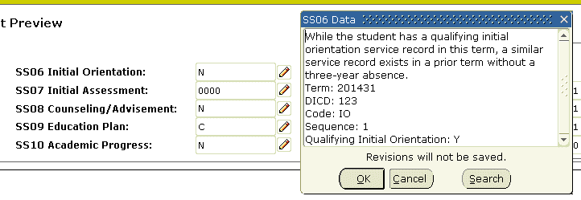

CALBSTU Banner Student page reference
California Community College pages.
Source Background Type Validation (GTVSBGT) page
The Source Background Type Validation (GTVSBGT) page was created to support a new validation functionality.
Use the Source Background Type Validation (GTVSBGT) page to create, update, insert, and delete source/background type validation codes, such as County-District- School (CDS) and College Entrance Examination Board (CEEB) and so on.
These codes are used on the subsection Source Background Type of the Source/Background Institution Code Validation (STVSBGI) page to allow configuration of multiple source background type codes values. You can create and update these codes only from this page.
Please see the Required System Values for Validation Pages section in the Validation Pages chapter of the Banner Student Use content for a list of required system values for this validation page.
| Field | Description |
|---|---|
| Code | Code of the "Source Background Type". Use this code to indicate the source of the transcript. |
| Description | Description of the Code of the "Source Background Type". Use this to indicate the description of the code. |
| System Required | Check box used to specify whether this value is required by the system. If this check box is checked, the validation table record cannot be deleted. |
Academic Year Dates (SVAACYR) page
The Academic Year Validation (SVAACYR) page was created to support the CCFS-320 Reporting functionality.
Use this page to enter or display apportionment reporting dates associated with an academic year. The following table provides examples of relationships between academic year codes (STVACYR_CODE) and calendar year end values (SVBACYR_END_YEAR).
| Example Academic Year Code STVACYR_CODE | What the Academic Year Code Represents | Example Calendar Year End SVBACYR_END_YEAR | Year Start and End Dates |
|---|---|---|---|
| 2007 | Leading year in the academic year | 2008 | 31-JUL-2007 to 30-JUN-2008 |
| 2008 | Trailing year in the academic year | 2008 | 31-JUL-2007 to 30-JUN-2008 |
| 0708 | Two-digit abbreviation of both years in the academic year | 2008 | 31-JUL-2007 to 30-JUN-2008 |
When a new code is added, the system populates the date fields with defaults based on the value entered in the Academic Year Ending field. These defaults are used only on the initial entry of the academic year ending value. After that, the user can change the dates, and the dates will not be reset to the defaults.
| Field | Description |
|---|---|
| Leading Summer | Check box used to indicate whether the summer intersession leads the academic year (that is, Summer-Fall-Spring) instead of trails the academic year (that is, Fall-Spring-Summer). |
| Academic Year Ending | Calendar year in which the academic year ends. When adding a new record, the value initially entered here automatically populates the four date fields if they are all null. |
| End Period 1 | Last date of the first reporting period used in apportionment reporting. This must be December 31 of the appropriate year. |
| End Period 2 | Last date of the second reporting period used in apportionment reporting. This must be April 15 of the appropriate year. |
Academic Year Apportionment Annualizer (SVAAPIZ) page
The Academic Year Apportionment Annualizer (SVAAPIZ) page was created to support the CCFS-320 Reporting functionality.
About this task
This page is used to enter, calculate, or display apportionment annualizers used in the CCFS-320 calculations. The calculated values are updated by the Calculate Annualizers button. The user can optionally override any of the calculated values by entering the override annualizer.
Annualizers are needed only for period 1 (P1) and period 2 (P2) reporting. Therefore, only those values are allowed in the Reporting Period field of the Key block.
The data displayed on this page is the live data used in the CCFS-320 calculations. The calculations and overrides are both for the academic year specified in the Key block and impact the academic year’s final report. These values, either the override if not null or the calculated value, are saved into the extract table and printed on Part VIII of the Summary Reports (SVRCALS).
When you start a new academic year and prepare for your first P1 CCFS-320 run, you must update this page as follows.
Procedure
Results
When SVRCALS is run, if the override is null, the calculated value is used for that category. If there is a value in the Annualizer Override field, it is used instead of the calculated value. If no values appear on this page or if the values are not reasonable for the values specified in the Key block, the SVRCALX process for the reporting period will end in error.
Main window
The main window is composed of the Key block and the Annualizers section.
Key block
Use this section to specify the academic year, district or college, and reporting period for which you want to enter, calculate, or display apportionment annualizers.
| Field | Description |
|---|---|
| Reporting Period | Code of the reporting period. The annual periods are not permitted because they do not require an annualizer.
|
Annualizers section
Use this section to enter, calculate, or display apportionment annualizers for the record specified in the Key block.
When an academic year/district or college/reporting period combination for which no record yet exists is entered in the Key block, the system creates a new record with .0000 displayed in all of the calculated fields. The user must calculate the annualizers using the button in the main window to update these annualizers to non-zero values. If desired, the user can update the optional override annualizers, which will be used in place of the calculated values in the CCFS-320 reporting.
The calculations use the setting of the Inmate CRN check box on the Attribute Validation (STVATTR) page to identify inmates-only, noncredit CRNs, overriding the CRN’s course credit setting to categorize the CRN into the appropriate noncredit annualizer.
| Field | Description |
|---|---|
| Calculated Annualizer Weekly Census | Calculated apportionment annualizer for courses with an attendance accounting method of Weekly. Display only. |
| Calculated Annualizer Daily Census | Calculated apportionment annualizer for courses with an attendance accounting method of Daily. Display only. |
| Calculated Annualizer Actual Noncredit | Calculated apportionment annualizer for noncredit courses with an attendance accounting method of Actual. An Actual CRN for which the Inmate CRN check box on STVATTR is checked is included in this calculation. Display only. |
| Calculated Annualizer Actual Credit | Calculated apportionment annualizer for credit courses with an attendance accounting method of Actual. Display only. |
| Calculated Annualizer Independent Study Weekly Census | Calculated apportionment annualizer for credit courses with an attendance accounting method of Independent Study combined with Weekly. Display only. |
| Calculated Annualizer Independent Study Daily Census | Calculated apportionment annualizer for credit courses with an attendance accounting method of Independent Study combined with Daily. Display only. |
| Calculated Annualizer Independent Study Noncredit | Calculated apportionment annualizer for noncredit courses with an attendance accounting method of Independent Study combined with Weekly. An Independent Study combined with Weekly CRN for which the Inmate CRN check box on STVATTR is checked is included in this calculation. Display only. |
| Calculated Annualizer Noncredit Enhanced Funding | Calculated apportionment annualizer for noncredit enhanced funding courses. An Independent Study combined with Weekly CRN for which the Inmate CRN check box on STVATTR is checked is included in this calculation, but the CRN’s course also must be defined as noncredit enhanced funding on the Course Detail Information (SCADETL) page. Display only. |
| Annualizer Override Weekly Census | Override apportionment annualizer to be used instead of the calculated value for courses with an attendance accounting method of Weekly. |
| Annualizer Override Daily Census | Override apportionment annualizer to be used instead of the calculated value for courses with an attendance accounting method of Daily. |
| Annualizer Override Actual Noncredit | Override apportionment annualizer to be used instead of the calculated value for noncredit courses with an attendance accounting method of Actual. |
| Annualizer Override Actual Credit | Override apportionment annualizer to be used instead of the calculated value for credit courses with an attendance accounting method of Actual. |
| Annualizer Override Independent Study Weekly Census | Override apportionment annualizer to be used instead of the calculated value for credit courses with an attendance accounting method of Independent Study combined with Weekly. |
| Annualizer Override Independent Study Daily Census | Override apportionment annualizer to be used instead of the calculated value for independent study credit courses with an attendance accounting method of Independent Study combined with Daily. |
| Annualizer Override Independent Study Noncredit | Override apportionment annualizer to be used instead of the calculated value for Independent Study combined with Weekly noncredit courses. |
| Annualizer Override Noncredit Enhanced Funding | Override apportionment annualizer to be used instead of the calculated value for noncredit enhanced funding courses. |
| Calculate Annualizers button | Runs the process that calculates the values and displays them in the Calculated Annualizer fields. If values exist in these fields, they will be replaced. It does not change any values entered in the Annualizer Override fields.
The annualizers are calculated using the following formula: PTCH / ATCH = Period Annualizer In this formula, PTCH is the total contact hours completed in the period being reported (that is, have passed the census or have ended for actual hours courses) and ATCH is the total contact hours for all courses scheduled during the academic year for the attendance type (includes courses scheduled in each primary term). Total contact hours is the total contact hours expected for the course such as the following: Hours per week * Number of weeks Hours per day * Number of days |
Registration Add Authorization Codes (SVAAUTC) page
Main window
The main window is composed of the Key block and the Authorization Code section.
Key block
Use this section to specify the term and CRN for which you want to enter or display registration add authorization codes. This section also displays information about the CRN when a valid term and CRN combination is entered.
| Field | Description |
|---|---|
| Authorization Codes Active For Section | Check box used to indicate whether Registration Add Authorization Code functionality is active for the specified selection. This check box is populated, if appropriate, when you go to the Go button. Display only. |
| Start Date | Date on which this CRN begins. If this is an Open Learning CRN, the date is the first date in the CRN’s start date range. Display only. |
| Census Date | Date on which to freeze the enrollment count for use in statistical reporting for this CRN. Display only. |
Authorization Code section
Enter Registration Add Authorization Codes (SVAAUTH) page
Buttons
Authorization Code Messages
Main window
The main window is composed of the Display-Only section and the Authorization Code section.
Authorization Code section
BOG Waiver Terms Definition (SVABTRM) page
The BOG Waiver Terms Definition (SVABTRM) page was created to support the BOGW functionality, which is now obsolete in CALBSTU and replaced with CALBFA BOGW functionality.
Any preexisting CALBSTU BOGW data is available for review but cannot be used to process more student BOG waivers. You can change data on this page, but you cannot use this data in BOGW processing.
CalWORKs Student Data (SVACWSD) page
The CalWORKs Student Data (SVACWSD) page was created to support the CalWORKs functionality. Use this page to enter or display CalWORKs student data.
July 2023 MIS Regulatory changes
As part of the MIS Regulatory changes delivered in July 2023, Ellucian has modified SC09/TOTAL-NUMBER-OF-DEPENDENT-CHILDREN to enable customers to report values 0—15. Before this modification, customers could only report values greater than 0.
For details, see Student Data or the 2023 MIS Regulatory Changes topic in the Release Notes content.
CalWORKs student data is entered by CCCCO reporting district ID and can be copied from one district to another through the Copy Student CalWORKs Data Process (SVRSCWR) or using the Copy window on this page.
Student Data
Use this section to enter or display CalWORKs data for the student specified in the Key block.
| Field | Description |
|---|---|
| Active | Check box used to specify whether the record is active. If this is unchecked, the record is inactive and will be suppressed from CCCCO MIS SC reporting, and no other fields in this section will be accessible for maintenance. |
| Eligibility Status | Code of the status specifying the student’s CalWORKs eligibility. |
| Case Management Services | Code indicating the case management services that the student has received. |
| Referral to Other Services | Code indicating any other services to which the student has been referred. |
| On Campus Child Care Hours | Number of hours of CalWORKs/TANF-funded on-campus child care services provided to dependent children of the student. |
| Off Campus Child Care Hours | Number of hours of CalWORKs/TANF-funded off-campus child care services provided to dependent children of the student. |
| Dependents in Child Care | Number of the student’s dependent children that received CalWORKs/TANF-funded child care services (on- or off-campus). |
| Total Number of Dependents | Number of the student’s dependent children at beginning of term, regardless of whether child care services were provided. Note: As of the July 2023 MIS Regulatory changes, institutions can report values 0-15. Before this modification, institutions could only report values > 0.
|
| Student Family Status | Code of the CalWORKs family status associated with the student at the beginning of the term. Note: As of the July 2023 MIS Regulatory changes, institutions can now report a value of Y (Not applicable).
|
| Student Counseling | Code of the student’s CalWORKs counseling status. If it is known, enter the code that indicates whether the student received non -CalWORKs funded counseling. If this is not known, enter only the code related to CalWORKs counseling. |
| Program Eligibility Time Limit Status | Code of the status specifying the student's CalWORKs program eligibility time limit. |
| Other Direct Support Services | |
| Tutoring | Check box used to indicate whether the student has received tutoring. |
| Books | Check box used to indicate whether the student has received books. |
| Educational Supplies | Check box used to indicate whether the student has received educational supplies. |
| Transportation Assistance | Check box used to indicate whether the student has received transportation assistance. |
| Other Education Related Expenses | Check box used to indicate whether the student has received services in relation to other education related expenses. |
| Employment Assistance Services | |
| Job Search | Check box used to indicate whether the student received CalWORKs/TANF-funded or dedicated CalWORKs job search services during the term. |
| Job Skills | Check box used to indicate whether the student received CalWORKs/TANF-funded or dedicated CalWORKs job skills services during the term. |
| Interview Skills | Check box used to indicate whether the student received CalWORKs/TANF-funded or dedicated CalWORKs interview skills services during the term. |
| Resume Writing | Check box used to indicate whether the student received CalWORKs/TANF-funded or dedicated CalWORKs resume writing services during the term. |
| Job Placement | Check box used to indicate whether the student received CalWORKs/TANF-funded or dedicated CalWORKs job placement services during the term. |
| Other Employment Service | Check box used to indicate whether the student received CalWORKs/TANF-funded or dedicated CalWORKs other employment services during the term. |
Work Activities section
Use this section to enter or display CalWORKs work activities for the student specified in the Key block.
| Field | Description |
|---|---|
| Active | Check box used to specify whether the record is active. If this is unchecked, the record is inactive and will be suppressed from CCCCO MIS SC reporting, and no other fields in this section will be accessible for maintenance. |
| Work Activity Status | Code associated with the student’s job (new or ongoing). |
| TOP Code | Taxonomy of program (TOP) code that best describes the student’s type of work. |
| Begin Year | Calendar year in which the student began the job, if known. |
| Begin Date | First date of the student’s job. This must be within the year specified in the Begin Year field, if a value was entered there.
Double-click in the field or select the Calendar button for this field to display a calendar that can be used to select the date. |
| End Date | Last date of the student’s job. This date cannot be earlier than the year specified in the Begin Year field, if a value was entered there.
Double-click in the field or select the Calendar button for this field to display a calendar that can be used to select the date. |
| Average Hours Worked per Week | Average number of hours, entered as a whole number, that the student is typically scheduled to work per week. |
| Highest Hourly Wage Earned | Highest regular hourly wage, entered in nn.nn format, that the student earned, excluding overtime or holiday pay rates. |
Copy CalWORKs Data to New Term window
Use this window to copy data from one term to another or from one district ID to another for the student specified in the Key block.
| Field | Description |
|---|---|
| Work Activity to Copy | Radio button group used to specify which work activity record to copy. Active Entries Only - Copies only records for which the Active check box in the Work Activities section has been checked. Only Active Entries with a Null End Date - Copies only records for which the Active check box in the Work Activities section has been checked and the End Date field in the Work Activities section is null. All Entries - Copies all records. |
Services section
Use this window to copy data from one term to another or from one district ID to another for the student specified in the Key block.
The SERVICES section allows you to specify the services that the student received for this program during this term. A student can receive multiple services. This information will be used for the Student Vision Aligned Report (VR).
| Field | Description | Values |
|---|---|---|
| Code | Click the Lookup button to select the code associated with the service. | Refer to the CCCCO website for the current list of services. |
| Type | Description of the chosen code. | |
| Status | Click the Lookup button to select the status associated with the service. |
|
| Service Description | Description of the chosen status. | |
| Date | Date of the service. | |
| Comments | Optional comments about the student's service. |
Term Computed Registration Drop Codes (SVADROP) page
The Term Computed Registration Drop Codes (SVADROP) page was created to support the Computed Drop Code and Drop Roster functionality.
Use this page to enter or display term computed registration drop codes, which are maintained in the SVBDROP table. Only one record can be defined for a term, and after a record is saved, it cannot be deleted.
The values entered in the Registration/Student Self-Service column “map” to the D drop code when it is used in the Student Course Registration (SFAREGS) page. If D is entered in the Status field of the Course Information section, the system determines what drop code to apply to the record based on the registration date and what is specified in the SVADROP page. These are also the codes that will appear in the drop-down list of the Action field of the Add or Drop Classes page (bwskfreg.P_AddDrpCrse) of Student Self-Service.
The fields in the Faculty and Advisor Self-Service column are the codes that will appear in the drop-down list of the Action field of the Add or Drop Classes page (bwlkfrad.P_FacAddDropCrse) in Faculty and Advisor Self-Service. They work the same as their respective Registration/Student Self-Service codes.
Course Registration Status Code for Action section
Use this section to define the computed registration drop codes for the term specified in the Key block. You can enter the same code in multiple fields, if desired.
| Field | Description |
|---|---|
| Registration/Student Self-Service Start Date Cutoff | Registration status code to be used for the calculated drop status in Banner and calculated drop action in Student Self-Service registration before (<) the CRN’s start date cutoff. |
| Registration/Student Self-Service Refund Cutoff | Registration status code to be used for the calculated drop status in Banner and calculated drop action in Student Self-Service registration after the start date cutoff and up to and including (<=) the CRN’s refund cutoff. |
| Registration/Student Self-Service Census One Cutoff | Registration status code to be used for the calculated drop status in Banner and calculated drop action in Student Self-Service registration after the refund cutoff and before (<) the CRN’s census one cutoff. |
| Registration/Student Self-Service Record Academic History Cutoff | Registration status code to be used for the calculated drop status in Banner and calculated drop action in Student Self-Service registration after the census one cutoff and up to and including (<=) the CRN’s record academic history cutoff. |
| Registration/Student Self-Service Drop Without Penalty Cutoff | Registration status code to be used for the calculated drop status in Banner and calculated drop action in Student Self-Service registration after the record academic history cutoff and up to and including (<=) the CRN’s drop without penalty cutoff. |
| Faculty and Advisor Self-Service Start Date Cutoff | Registration status code to be used for the calculated drop action in Faculty and Advisor Self-Service registration before (<) the CRN’s start date cutoff. |
| Faculty and Advisor Self-Service Refund Cutoff | Registration status code to be used for the calculated drop action in Faculty and Advisor Self-Service registration after the start date cutoff and up to and including (<=) the CRN’s refund cutoff. |
| Faculty and Advisor Self-Service Census One Cutoff | Registration status code to be used for the calculated drop action in Faculty and Advisor Self-Service registration after the refund cutoff and before (<) the CRN’s census one cutoff. |
| Faculty and Advisor Self-Service Record Academic History Cutoff | Registration status code to be used for the calculated drop action in Faculty and Advisor Self-Service registration after the census one cutoff and up to and including (<=) the CRN’s record academic history cutoff. |
| Faculty and Advisor Self-Service Drop Without Penalty Cutoff | Registration status code to be used for the calculated drop action in Faculty and Advisor Self-Service registration after the record academic history cutoff and up to and including (<=) the CRN’s drop without penalty cutoff. |
Institution MIS Control (SVAIMIS) page
The Institution MIS Control (SVAIMIS) page was created to support the MIS Reporting functionality.
- College Calendar Day Report (CC)
- Student Basic Data Report (SB_STU)
- Special Population Data Report (SG)
- Student Matriculation Report (SM)Note: These entries relate only to the SM report; they do not affect the SS report. Tthe SM report is now obsolete and replaced by SS, per the CCCCO. These entries are left for historical reference as needed to SM.
INSTITUTION MIS CONTROL section
The INSTITUTION MIS CONTROL section allows you to select a term range for the report.
| Field | Description |
|---|---|
| From Term | Enter the starting term |
| Copy | Click Copy to copy the selected term |
| Enter the ending term | Enter the ending term |
PROGRAMS OFFERED BY INSTITUTION section
The PROGRAMS OFFERED BY INSTITUTION section allows you to select which programs are supported by your institution.
| Field | Description |
|---|---|
| MESA Program | Check box used to specify whether your institution offers the Mathematics, Engineering, Science Achievement (MESA) program. This control affects the SG report as follows.
If a student record exists in a term within the term range (that is, the |
| Puente Program | Check box used to specify whether your institution offers the Puente program. This control affects the SG report as follows.
If a student record exists in a term within the term range (that is, the |
| MCHS or ECHS Program | Check box used to specify whether your institution offers the Middle College High School (MCHS) program or the Early College High School (ECHS) program. This control affects the SG report as follows.
If a student record exists in a term within the term range (that is, the |
| Umoja Program | Check box used to specify whether your institution offers the Umoja program. This control affects the SG report as follows.
If a student record exists in a term within the term range (that is, the |
| Career Advancement Academy (CAA) Program | Check box used to specify whether your institution offers the CAA program. This control affects the SG report as follows.
If a student record exists in a term within the term range (that is, the |
| Cooperating Agencies Foster Youth Educational Support (CAFYES) Program | Check box used to specify whether your institution offers the CAFYES program. This control affects the SG report as follows.
If a student record exists in a term within the term range (that is, the |
| College and Career Access Pathways (CCAP) Program | Check box used to specify whether your institution offers the CCAP program. This control affects the SG report as follows.
If a student record exists in a term within the term range (that is, the |
| Apprenticeship Program | Check box used to specify whether your institution offers an apprenticeship program. This control affects the SB_STU report as follows.
If a student record (SGBSTDN) exists in a term within the term range (that is, the |
| Transfer Center Program | Check box used to specify whether your institution offers a transfer center program. This control affects the SB_STU report as follows.
If a student record (SGBSTDN) exists in a term within the term range (that is, the |
| Flexible Calendar Program | Check box used to specify whether your institution offers a flexible calendar program. This control affects the CC report as follows.
If a calendar date record (SOBCALD) exists where the calendar date is within the range of the from term’s start and end dates on the Term Code Validation (STVTERM) page, and where the district/college ID linked to the calendar date’s campus matches the SVAIMIS district/college ID, the system displays a warning if this check box is unchecked when you save. The warning is not a hard error and will not prevent the record from being saved. The warning message text is: *WARNING* A calendar day exists that has a Flex Status within this college/district and term-effective range's dates of this control. This means that there is reportable CC05 data within the range of this control, but this setting specifies that the program is not offered. (A similar warning is not issued for SOACALD.) There can be multiple records for the same date and varying campuses within the date range. It does not matter how many records for the same date exist within the SVBIMIS range. It only matters that at least one record within the range with the warning condition exists. |
| A2MEND Program | Check box used to specify whether your institution offers the African American Male Education Network and Development (A2MEND) program.
|
| Housing Program | Check box used to specify whether your institution offers a Housing program that enables the student to live in campus-owned, campus-operated, or campus-affiliated student housing.
If the Housing Program item in SVAIMIS is checked, then:If a student has an entry in TSAAREV for the reporting term with Source Code = B (this denotes Housing) and Transaction Date less than or equal to the STVTERM Start Date of the reporting term, then report SG25 = ‘1’ If the 'Housing Program' item in SVAIMIS is checked, and If a student does not have an entry in TSAAREV for the reporting term, then report SG25 = ‘0’ If the 'Housing Program' item in SVAIMIS is checked, and If a student has an entry in TSAAREV for the reporting term with Source Code <> B and Transaction Date less than or equal to the STVTERM Start Date of the reporting term, then report SG25 = ‘0’ If the 'Housing Program' item in SVAIMIS is checked, and If a student has an entry in TSAAREV for the reporting term with Source Code = B and Transaction Date greater than STVTERM Start Date of the reporting term, then report SG25 = ‘0’ If the 'Housing Program' item in SVAIMIS is checked, and If a student has an entry in TSAAREV for the reporting term with Source Code <> B and Transaction Date greater than STVTERM Start Date of the reporting term, then report SG25 = ‘0’ |
Key block
Use this section to enter the ID, term, and District or College ID for the student.
BOG Income by Household Size Rule (SVAINCR) page
The BOG Income by Household Size Rule (SVAINCR) page was created to support the BOGW functionality, which is now obsolete in CALBSTU and replaced with CALBFA BOGW functionality.
Any preexisting CALBSTU BOGW data is available for review but cannot be used to process more student BOG waivers. You can change data on this page, but you cannot use this data in BOGW processing.
Faculty ID/Term-Specific Load Limits (SVALOLI) page
The Faculty ID/Term-Specific Load Limits (SVALOLI) page was created to support the Faculty Load Limit functionality.
Use this page to enter or display load limit adjustments to a specific faculty member for a specific term. This allows you to define a different load limit by term for the faculty member from that established for the assigned faculty staff type code in the Faculty Staff Type Code Validation (STVFSTP) page.
If the Faculty Load Limits Error Handling option group is set to Administrative Override on the STVFSTP and if a user attempts to save an assignment on the Faculty Assignment (SIAASGN) page or the Section (SSASECT) page that will exceed the established load limit, the system will display a message. The user must get an administrative user to enter an adjustment on the faculty member’s load limit on SVALOLI, or else the record cannot be saved on SIAASGN or SSASECT.
A load limit defined on this page takes precedence (for the term) over the limit defined on STVFSTP.
If a load limit has not been defined on STVFSTP for the faculty staff type code, load limit tracking will not be in effect. If a limit is defined on SVALOLI but not on STVFSTP, when you save the record on SVALOLI, the system displays the message, This faculty ID is defined with a Faculty Staff Type Code that is not being faculty load tracked. The load limits listed will be ignored in the faculty load limit validation processes.
Similarly, if the term has not been set up as subject to faculty load limits on the Faculty Load Term Control (SIATERM) page, load limit tracking will not be in effect. If you try to define a limit on SVALOLI, when you save the record, the system displays the message, The term (xxxxxx) is not coded as faculty load tracked. The load limit for this term will be ignored in the faculty load limit validation processes.
Load Limit section
Use this section to enter or display load limit adjustments for the faculty ID specified in the Key block. To remove an administrative override, delete the record in this section.
| Field | Description |
|---|---|
| Term | You can create only one adjustment per term for a faculty member. |
| ID Load Limit for Term (FTE) | Numeric value between 0.000 and 9.999 that represents the maximum load limit for the faculty ID and term combination. 1.000 represents “100.0%”.
If you enter a value that is greater than the Type Load Limit (FTE) value in the Key block, the ID can have more load than standard. If you enter a value that is less than the Type Load Limit (FTE) value, the ID is limited even more than standard. A lower limit on a term can be used to offset a higher limit in another term. This allows flexibility in meeting the contract or regulatory load limits across multiple terms. |
MIS Special Historical Data (SVAMISH) page
The MIS Special Historical Data (SVAMISH) page was created to support the MIS Reporting functionality. Use this page to enter or display historical data required by the Special Population Data Report (SG). This is the historical, term-effective data (not term-specific).
Form Security
User security constraints are in effect for this page. A user can access a tab only if their business profile includes the relevant value as defined in the FGAC Business Profile Assignments (GOAFBPR) page, as shown in the following table.
| To access this tab... | Fine-Grained Access User ID field on GOAFBPR must contain this value... |
|---|---|
| Military | SVAMISH_MILITARY |
| Foster Youth | SVAMISH_FOSTER |
| Guardian Information | SVAMISH_GUARDIAN |
| AB540 | SVAMISH_AB540 |
Key block
Use this section to enter the ID, term, and District or College ID for the student.
Military
See Form Security for security constraints on this tab.
MILITARY SERVICE STATUS section
The MILITARY SERVICE STATUS section allows you to select the military service status of a student or the student's guardian.
The Student's Military Service Status allows you to select the option that best corresponds to the student's military service status:
| Field | Description |
|---|---|
| Currently Serving on Active Duty | Select if the student is currently serving in active duty in the military. |
| Veteran | Select if the student is a military veteran |
| Member of the Active Reserve | Select if the student is a member of the Active Reserve. Note: Do not check this check box and the Member of the National Guard check box.
|
| Member of the National Guard | Select if the student is a member of the National Guard. Note: Do not check this check box and the Member of the Active Reserve check box.
|
The Student's Guardian/Parent Military Service Status allows you to select the option that best corresponds to the student's guardian or parent military service status:
| Field | Description |
|---|---|
| Guardian Currently Serving on Active Duty | Select if the student's guardian or parent is currently serving in active duty in the military. |
| Guardian Veteran | Select if the student's guardian or parent is a military veteran |
| Guardian Member of the Active Reserve | Select if the student's guardian or parent is a member of the Active Reserve. Note: Do not check this check box and the Guardian Member of the National Guard check box.
|
| Guardian Member of the National Guard | Select if the student's guardian or parent is a member of the National Guard. Note: Do not check this check box and the Guardian Member of the Active Reserve check box.
|
The Military Service Home State allows you to select the student's home state where they performed their military service:
| Field | Description |
|---|---|
| Military Home State | Click the Lookup button to select the code associated with the student's home state or province where they performed their military service. |
Foster Youth
See Form Security for security constraints on this tab.
FOSTER YOUTH STATUS section
The FOSTER YOUTH STATUS section allows you to select the foster youth status of a student.
| Field | Description |
|---|---|
| Foster Youth Status | Click the Lookup button to select the code that best identifies whether the student is now or has ever been in a court-ordered out-of-home placement. |
| Homeless Status | Click the Lookup button to select the code that best identifies whether the student is now or has ever been homeless. |
Guardian Information
See Form Security for security constraints on this tab.
GUARDIAN INFORMATION section
The GUARDIAN INFORMATION section allows you to select the educational level of the student's guardian(s).
| Field | Description |
|---|---|
| First Guardian (Parent) Educational Level | Click the Lookup button to select the code associated with the educational level of the student's first guardian. |
| Second Guardian (Parent) Educational Level | Click the Lookup button to select the code associated with the educational level of the student's second guardian. |
DEPENDENT INFORMATION section
The DEPENDENT INFORMATION section allows you to select the number of legal dependents of a student's guardian.
| Field | Description | Values |
|---|---|---|
| Legal Dependents under 18 years old | Click the Lookup button to select the code associated with the number of legal dependents under 18 years old. | Select from the following valid values:
|
| Legal Dependents 18 years old or older | Click the Lookup button to select the code associated with the number of legal dependents who are 18 years or older. | Select from the following valid values:
|
AB540
See Form Security for security constraints on this tab.
AB540 section
The AB540 section allows you to identify if the student is eligible for the AB540 waiver.
| Field | Description |
|---|---|
| AB540 Eligible (CCCApply) | Select if the applicant is eligible for AB540 tuition waiver, as determined by the Submission Calculation Service. |
MIS Special Academic Year Data (SVAMISA) page
The MIS Special Academic Year Data (SVAMISA) page supports the MIS-SN Student Nursing Reporting functionality.
Use this page to enter or display student nursing program enrollment data for annual submission to the California Community Colleges Chancellor's Office (CCCCO).
Use this page to record student participation in a nursing program for the academic year. Data entered on this page is used by the SVRCASN batch process to derive the SP04 element in the Student Nursing (SN) MIS report.
Unlike the MIS Special Historical Data (SVAMISH) and MIS Special Term Data (SVAMIST) pages, SVAMISA does not use Fine-Grained Access Control (FGAC) tab security through the FGAC Business Profile Assignments (GOAFBPR) page. For details, see Page Access.
Nursing program enrollment data entered on this page is stored in the SVRPSID table and read by SVRCASN during the SN report generation.
Page Access
SVAMISA does not use Fine-Grained Access Control (FGAC) tab security. Access to the page is controlled through standard Banner page-level security.
Unlike the MIS Special Historical Data (SVAMISH) and MIS Special Term Data (SVAMIST) pages, the SVAMISA page does not use the FGAC Business Profile Assignments (GOAFBPR) page to control tab-level access. Nursing tab data is accessible to any user with standard page-level access granted to SVAMISA.
Key block
Use the key block to identify the student and academic year for which nursing program enrollment data is being entered or displayed.
| Field | Description |
|---|---|
| ID | Student Banner ID. Enter the student ID or use the search to look up the student. |
| Name | Student name. Display only. Populated when the student ID is entered. |
| Academic Year | Academic year code for the nursing report period. Valid values are from the Academic Year Code Validation (STVACYR) page, excluding 0000 and 9999. The SN report is submitted annually for the previous academic year. |
| District/College ID (DICD) | District or College ID assigned by the CCCCO (MIS element GI01). This value matches the District ID parameter used when running SVRCASN. |
Nursing tab
Use the Nursing tab to enter, edit, or delete student nursing program enrollment records for the academic year. Each row in the grid records one nursing program the student is enrolled in.
The Nursing tab contains a grid where you enter each nursing program in which the student is enrolled for the academic year. Each row represents a unique combination of Program Name and SN Status for the student and academic year entered in the key block. Data on this tab is read by SVRCASN to derive the SP04 element in the SN MIS report.
Nursing tab fields
| Field | Description |
|---|---|
| Program Name |
The nursing program. Values are sourced from SOAXREF entries where Label = NURSPROG and the qualifier includes the District/College ID (for example, SP04DCID). The LOV displays the Banner Value from the matching SOAXREF entry. |
| SN Status |
The nursing program status for the student for the academic year. Values are sourced from the GORSEID table where the NURSING identifier type is configured. Used by SVRCASN to derive the SP04 MIS element value. |
| Start Date | Start date of enrollment for the student in this nursing program for the academic year. |
| End Date | End date of enrollment for the student in this nursing program. Leave blank if the enrollment is ongoing. |
Adding a nursing record
To add a nursing record for a student, see Add a nursing record for a student.
Copying a nursing record to a new academic year
You can copy an existing nursing record from one academic year to another using the Copy function on the Nursing tab.
Common problems and possible solutions
- Program Name LOV is empty.
No SOAXREF entries exist for NURSPROG with the qualifier matching the District/College ID. Verify the SOAXREF configuration for NURSPROG. See Configure the NURSPROG crosswalk for SP04.
- SN Status LOV is empty.
GORSEID NURSING identifier type codes are not loaded. Verify that GORSEID entries for type NURSING are configured on the system.
Add a nursing record for a student
You can add one or more nursing records for a student on the SVAMISA page.
About this task
Procedure
- Enter the student ID in the key block and press Tab.
- Enter the Academic Year code.
- Enter the District/College ID.
- Navigate to the Nursing tab.
- In the grid, select a value from the Program Name list of values (LOV).
- Select the applicable SN Status from the LOV.
- Enter the Start Date and, if applicable, the End Date.
- Select Save.
MIS Special Term Data (SVAMIST) page
The MIS Special Term Data (SVAMIST) page was created to support the MIS Reporting functionality.
Use this page to enter or display student data required by the Special Population Data Report (SG). This page uses term-specific data (not term-effective).
Form Security
User security constraints are in effect for this page. A user can access a tab only if their business profile includes the relevant value as defined in the FGAC Business Profile Assignments (GOAFBPR) page, as shown in the following table.
| To access this tab... | Fine-Grained Access User ID field on GOAFBPR must contain this value... |
|---|---|
| Justice | SVAMIST_JUSTICE |
| MESA/ASEM | SVAMIST_MESA |
| Puente | SVAMIST_PUENTE |
| MCHS/ECHS | SVAMIST_MCHS |
| Umoja | SVAMIST_UMOJA |
| Career Advancement Academy | SVAMIST_CAA |
| Foster Youth | SVAMIST_FOSTER |
| Career Access Pathways | SVAMIST_CCAP |
| Work-based Learning | SVAMIST_WORK |
| A2MEND | SVAMIST_A2MEND |
Key block
Use this section to enter the ID, term, and District or College ID for the student.
Justice
See Form Security for security constraints on this tab.
STUDENT INCARCERATED STATUS section
The STUDENT INCARCERATED STATUS section allows you to select the option that best corresponds to the student's incarcerated status:
| Field | Description | Values |
|---|---|---|
| Student Incarcerated Status | Click the Lookup button to select the code associated with the student incarcerated status. | Select from the following valid values:
|
STUDENT YOUTH JUSTICE STATUS section
The STUDENT YOUTH JUSTICE STATUS section allows you to select the option that best corresponds to the student's justice status:
| Field | Description | Values |
|---|---|---|
| Student Youth Justice Status | Click the Lookup button to select the code associated with the student youth justice status. | Select from the following valid values:
|
STUDENT RISING SCHOLARS NETWORK STATUS section
The STUDENT RISING SCHOLARS NETWORK STATUS section allows you to select the option that best corresponds to the student's rising scholar network status:
| Field | Description | Values |
|---|---|---|
| Student Rising Scholars Network Status | Click the Lookup button to select the code associated with the student youth justice status. | Select from the following valid values:
|
MESA/ASEM
See Form Security for security constraints on this tab.
MESA PROGRAM/ASEM MAJOR section
The MESA PROGRAM/ASEM MAJOR section allows you to select the option that best corresponds to the student's Mathematics, Engineering, and Science Achievement (MESA) or Achievement in a Science, Engineering, or Mathematics (ASEM) status:
| Field | Description | Values |
|---|---|---|
| MESA/ASEM Status | Click the Lookup button to select the code associated with the student incarcerated status. | Select from the following valid values:
|
Warnings
- An SVBIMIS/SVAIMIS MIS control record exists for this term (that is, the
SVBMESA_TERM_CODEvalue is within theSVBIMIS_EFF_TERMrange) and the district/college ID (SVBIMIS_DICD_CODE=SVBMESA_DICD_CODE) - The matching SVBIMIS record (by effective term and district/college ID) indicates that the MESA program is not offered (that is, the MESA Program check box on the Institution MIS Control [SVAIMIS] page is unchecked [
SVBIMIS_MESA_IND<> Y]) - The value in the MESA/ASEM Status field (
SVBMESA_MESA_CODE) for the student you are maintaining is not null
When these conditions are met, the system displays a warning that is not a hard error and will not prevent the record from being saved. The warning message text is: *WARNING* The MIS controls for this college/district and term indicate MESA Program is not offered. The student data will be ignored in the MIS report.
SERVICES section
The SERVICES section allows you to specify the services the student received for this program during this term; a student may have received multiple services. This information will be used for the Student Vision Aligned Report (VR).
| Field | Description | Values |
|---|---|---|
| Code | Click the Lookup button to select the code associated with the service. | Refer to the CCCCO website for the current list of services. |
| Type | Description of the chosen code. | |
| Status | Click the Lookup button to select the status associated with the service. |
|
| Status Description | Description of the chosen status. | |
| Date | Date of the service. | |
| Comments | Optional comments about the student's service. |
Puente
See Form Security for security constraints on this tab.
PUENTE PROGRAM STATUS section
The PUENTE PROGRAM STATUS section allows you to select the option that best corresponds to the student's Puente Program status. The Puente Program is a nationwide initiative that enables educationally-underrepresented or disadvantaged students to enroll in four-year colleges. The program offers writing, counseling, and mentoring services to help students reach their educational goals.
| Field | Description | Values |
|---|---|---|
| Puente Program Status | Click the Lookup button to select the code associated with the student's Puente status. | Select from the following valid values:
|
Warnings
- An SVBIMIS/SVAIMIS MIS control record exists for this term (that is, the
SVBPNTE_TERM_CODEvalue is within theSVBIMIS_EFF_TERMrange) and the district/college ID (SVBIMIS_DICD_CODE=SVBPNTE_DICD_CODE) - The matching SVBIMIS record (by effective term and district/college ID) indicates that the Puente program is not offered (that is, the Puente Program check box on SVAIMIS is unchecked [
SVBIMIS_PUENTE_IND<> Y]) - The value in the Puente Program Status field (
SVBPNTE_PNTE_CODE) for the student you are maintaining is not null
When these conditions are met, the system displays a warning that is not a hard error and will not prevent the record from being saved. The warning message text is: *WARNING* The MIS controls for this college/district and term indicate Puente Program is not offered. The student data will be ignored in the MIS report.
MCHS/ECHS
See Form Security for security constraints on this tab.
MCHS PROGRAM/ECHS PROGRAM STATUS section
The MCHS PROGRAM/ECHS PROGRAM STATUS section allows you to select the option that best corresponds to the student's Middle College High School (MCHS) program or the Early College High School (ECHS) program status:
| Field | Description | Values |
|---|---|---|
| MCHS/ECHS Status | Click the Lookup button to select the code associated with the student incarcerated status. | Select from the following valid values:
|
Warnings
- An SVBIMIS/SVAIMIS MIS control record exists for this term. That is, the
SVBMCHS_TERM_CODEvalue is within theSVBIMIS_EFF_TERMrange, and the district/college ID (SVBIMIS_DICD_CODE=SVBMCHS_DICD_CODE). - The matching SVBIMIS record (by effective term and district/college ID) indicates that the MCHS or ECHS program is not offered, that is, the MCHS or ECHS Program check box on SVAIMIS is cleared [
SVBIMIS_MCHS_IND<> Y]) - The value in the MCHS/ECHS Program Status field (
SVBMCHS_MCHS_CODE) for the student you are maintaining is not null.
When these conditions are met, the system displays a warning that is not a hard error and will not prevent the record from being saved. The warning message text is: *WARNING* The MIS controls for this college/district and term indicate MCHS Program and ECHS Program are not offered. The student data will be ignored in the MIS report.
SERVICES section
The SERVICES section allows you to specify the services the student received for this program during this term; a student may have received multiple services. This information will be used for the Student Vision Aligned Report (VR).
| Field | Description | Values |
|---|---|---|
| Code | Click the Lookup button to select the code associated with the service. | Refer to the CCCCO website for the current list of services. |
| Type | Description of the chosen code. | |
| Status | Click the Lookup button to select the status associated with the service. |
|
| Status Description | Description of the chosen status. | |
| Date | Date of the service. | |
| Comments | Optional comments about the service to the student. |
Umoja
See Form Security for security constraints on this tab.
UMOJA PROGRAM STATUS section
The UMOJA PROGRAM STATUS section allows you to select the option that best corresponds to the student's Umoja Program status. The Umoja Program is a worldwide initiative whose purpose is to increase the number of African Americans and people of color who earn degrees, transfer to four-year colleges or universities, and return to their communities as leaders and mentors for future students.
| Field | Description | Values |
|---|---|---|
| Umoja Program Status | Click the Lookup button to select the code associated with the student's Umoja status. | Select from the following valid values:
|
Warnings
- An SVBIMIS/SVAIMIS MIS control record exists for this term (that is, the
SVBSUST_TERM_CODEvalue is within theSVBIMIS_EFF_TERMrange) and the district/college ID (SVBIMIS_DICD_CODE=SVBSUST_DICD_CODE) - The matching SVBIMIS record (by effective term and district/college ID) indicates that the Umoja program is not offered (that is, the Umoja Program check box on SVAIMIS is unchecked [
SVBIMIS_UMOJA_IND<> Y]) - The value in the Umoja Program Status field (
SVBSUST_SUST_CODE) for the student you are maintaining is not null
When these conditions are met, the system displays a warning that is not a hard error and will not prevent the record from being saved. The warning message text is: *WARNING* The MIS controls for this college/district and term indicate Umoja Program is not offered. The student data will be ignored in the MIS report.
Career Advancement Academy
See Form Security for security constraints on this tab.
CAREER ADVANCEMENTS ACADEMY (CAA) STATUS section
The CAREER ADVANCEMENTS ACADEMY (CAA) STATUS section allows you to select the option that best corresponds to the student's CAA status.
| Field | Description | Values |
|---|---|---|
| Career Advancement Academy (CAA) Participant | Click the Lookup button to select the code associated with the student's CAA status. | Select from the following valid values:
|
Warnings
- An SVBIMIS/SVAIMIS MIS control record exists for this term (that is, the
SVBSCAA_TERM_CODEvalue is within theSVBIMIS_EFF_TERMrange) and the district/college ID (SVBIMIS_DICD_CODE=SVBSCAA_DICD_CODE) - The matching SVBIMIS record (by effective term and district/college ID) indicates that the CAA program is not offered (that is, the Career Advancement Academy (CAA) Program check box on SVAIMIS is unchecked [
SVBIMIS_CAA_IND<> Y]) - The value in the Career Advancement Academy (CAA) Status field (
SVBSCAA_CAAS_CODE) for the student you are maintaining is populatedwith a value other than 0.
When these conditions are met, the system displays a warning that is not a hard error and will not prevent the record from being saved. The warning message text is: *WARNING* The MIS controls for this college/district and term indicate Career Advancement Academy is not offered. The student data will be ignored in the MIS report.
SERVICES section
The SERVICES section allows you to specify the services the student received for this program during this term; a student may have received multiple services. This information will be used for the Student Vision Aligned Report (VR).
| Field | Description | Values |
|---|---|---|
| Code | Click the Lookup button to select the code associated with the service. | Refer to the CCCCO website for the current list of services. |
| Type | Description of the chosen code. | |
| Status | Click the Lookup button to select the status associated with the service. |
|
| Status Description | Description of the chosen status. | |
| Date | Date of the service. | |
| Comments | Optional comments about the student's service. |
Foster Youth
See Form Security for security constraints on this tab.
FOSTER YOUTH STATUS section
The FOSTER YOUTH STATUS section allows you to identify if the student is a participant in the Cooperating Agencies Foster Youth Educational Support (CAFYES) program.
| Field | Description |
|---|---|
| Cooperating Agencies Foster Youth Educational Support (CAFYES) Participant | Select if the student is a participant in the Cooperating Agencies Foster Youth Educational Support (CAFYES) program. |
Warnings
- An SVBIMIS/SVAIMIS MIS control record exists for this term (that is, the
SVBFYSP_TERM_CODEvalue is within theSVBIMIS_EFF_TERMrange) and the district/college ID (SVBIMIS_DICD_CODE=SVBFYSP_DICD_CODE) - The matching SVBIMIS record (by effective term and district/college ID) indicates that the CAFYES program is not offered (that is, the Cooperating Agencies Foster Youth Educational Support (CAFYES) Program check box on SVAIMIS is unchecked [
SVBIMIS_CAA_IND<> Y]) - The value in the Cooperating Agencies Foster Youth Educational Support (CAFYES) field (
SVBFYSP_CAA_IND) for the student you are maintaining is Y (checked)
When these conditions are met, the system displays a warning that is not a hard error and will not prevent the record from being saved. The warning message text is: *WARNING* The MIS controls for this college/district and term indicate Cooperating Agencies Foster Youth Educational Support (CAFYES) is not offered. The student data will be ignored in the MIS report.
SERVICES section
The SERVICES section allows you to specify the services the student received for this program during this term; a student may have received multiple services. This information will be used for the Student Vision Aligned Report (VR).
| Field | Description | Values |
|---|---|---|
| Code | Click the Lookup button to select the code associated with the service. | Refer to the CCCCO website for the current list of services. |
| Type | Description of the chosen code. | |
| Status | Click the Lookup button to select the status associated with the service. |
|
| Status Description | Description of the chosen status. | |
| Date | Date of the service. | |
| Comments | Optional comments about the student's service. |
College and Career Access Pathways
See Form Security for security constraints on this tab.
COLLEGE AND CAREER ACCESS PATHWAYS (CCAP) STATUS section
The COLLEGE AND CAREER ACCESS PATHWAYS (CCAP) STATUS section allows you to select the option that best corresponds to the student's CCAP status.
| Field | Description |
|---|---|
| College and Career Access Pathways (CCAP) Participant | Select if the student is a participant in the College and Career Access Pathways (CCAP) program. |
Work-based Learning
See Form Security for security constraints on this tab.
STUDENT WORK-BASED LEARNING STATUS section
The STUDENT WORK-BASED LEARNING STATUS section allows you to select the option that best corresponds to the student's work-based learning status.
| Field | Description |
|---|---|
| Student Work-based Learning Status | Click the Lookup button to select the code associated with the student's work-based learning status. |
| Student Work-based Learning Status Description | Provides details about the selected work-based learning status |
SERVICES section
The SERVICES section allows you to specify the services the student received for this program during this term; a student may have received multiple services. This information will be used for the Student Vision Aligned Report (VR).
| Field | Description | Values |
|---|---|---|
| Code | Click the Lookup button to select the code associated with the service. | Refer to the CCCCO website for the current list of services. |
| Type | Description of the chosen code. | |
| Status | Click the Lookup button to select the status associated with the service. |
|
| Status Description | Description of the chosen status. | |
| Date | Date of the service. | |
| Comments | Optional comments about the student's service. |
A2MEND
See Form Security for security constraints on this tab.
A2MEND PROGRAM STATUS section
The A2MEND PROGRAM STATUS section allows you to select the option that best corresponds to the student's A2MEND status.
| Field | Description | Values |
|---|---|---|
| A2MEND Program Status | Click the Lookup button to select the code associated with the student's A2MEND program status. | Select from the following valid values:
Note: With the July 2023 MIS Regulatory updates, you will only be able to see and select valid and active A2MEND codes for this field.
|
Asian American, Native Hawaiian, Pacific Islander
See Form Security for security constraints on this tab.
AANHPI STUDENT ACHIEVEMENT section
The AANHPI STUDENT ACHIEVEMENT section allows you to select the option that best corresponds to the Asian American Native Hawaiian Pacific Islander status of the student.
| Field | Description |
|---|---|
| AANHPI Student Achievement | Click the Lookup button to select the code associated with the student's AANHPI status. |
| AANHPI Student Achievement Description | Provides details about the selected status. |
SERVICES section
The SERVICES section allows you to specify the services the student received for this program during this term; a student may have received multiple services. This information will be used for the Student Vision Aligned Report (VR).
| Field | Description | Values |
|---|---|---|
| Code | Click the Lookup button to select the code associated with the service. | Refer to the CCCCO website for the current list of services. |
| Type | Description of the chosen code. | |
| Status | Click the Lookup button to select the status associated with the service. |
|
| Status Description | Description of the chosen status. | |
| Date | Date of the service. | |
| Comments | Optional comments about the student's service. |
Student Equity and Achievement
See Form Security for security constraints on this tab.
SEA STATUS section
The SEA STATUS section allows you to select the option that best corresponds to the Student Equity and Achievement program status of the student.
| Field | Description |
|---|---|
| SEA Status | Click the Lookup button to select the code associated with the student's SEA status. |
| SEA Status Description | Provides details about the selected status. |
SERVICES section
The SERVICES section allows you to specify the services the student received for this program during this term; a student may have received multiple services. This information will be used for the Student Vision Aligned Report (VR).
| Field | Description | Values |
|---|---|---|
| Code | Click the Lookup button to select the code associated with the service. | Refer to the CCCCO website for the current list of services. |
| Type | Description of the chosen code. | |
| Status | Click the Lookup button to select the status associated with the service. |
|
| Status Description | Description of the chosen status. | |
| Date | Date of the service. | |
| Comments | Optional comments about the student's service. |
Transfer Center
See Form Security for security constraints on this tab.
TRANSFER CENTER STATUS section
The Transfer Center Status section allows you to select the option that best corresponds to the transfer status of the student.
| Field | Description |
|---|---|
| Transfer Center Status | Click the Lookup button to select the code associated with the student's transfer center status. |
| Transfer Center Status Description | Provides details about the selected status. |
SERVICES section
The SERVICES section allows you to specify the services the student received for this program during this term; a student may have received multiple services. This information will be used for the Student Vision Aligned Report (VR).
| Field | Description | Values |
|---|---|---|
| Code | Click the Lookup button to select the code associated with the service. | Refer to the CCCCO website for the current list of services. |
| Type | Description of the chosen code. | |
| Status | Click the Lookup button to select the status associated with the service. |
|
| Status Description | Description of the chosen status. | |
| Date | Date of the service. | |
| Comments | Optional comments about the student's service. |
MIS Success and Support Services Historical Data (SVAMSHD) page
The MIS Success and Support Services Historical Data (SVAMSHD) page was created to support the MIS Reporting functionality.
Use it to enter and display historical student or applicant educational goal and exempt status information. This is the Student Success Report (SS) information that may not change very often and is included on the SS report when there are services to report. Therefore, the page is term effective so that the data can be continuously reported until it changes in a specific term.
The Education Goal tab collects the informed or current education goal. If education goals are entered, there must be at least one and only one primary goal. This is the goal that is used in MIS SS reporting.
The Exemption Status tab collects the various exemption reasons for the related SS report elements. The section titled Credit Services will collect credit elements pertaining to SS03 - SS05, while the section titled Noncredit Services will collect noncredit elements pertaining to SS13-SS15.
- SS01 Student Educational Goal
- SS03 Student Initial Orientation Exempt Status
- SS04 Student Initial Assessment Exempt Status
- SS05 Student Education Plan Exempt Status
- SS13 Student Noncredit Initial Orientation Exempt Status
- SS14 Student Noncredit Initial Assessment Exempt Status
- SS15 Student Noncredit Education Plan Exempt Status
The entries allow you to set a default value in accordance to your policies and procedures that will print when an ID on the report has no data defined for the related element on this page. Refer to the “Education goal and exemption status default values” section in the “MIS Reporting” topic in Banner California Community College Baseline Student Use for details.
MIS Success and Support Services Term Data (SVAMSTD) page
The MIS Success and Support Services Term Data (SVAMSTD) page was created to support the MIS Reporting functionality.
Use it to enter and display term-specific student or applicant service or Student Success Report (SS) data. This is the SS report information for the activities for a specific term and is included on the SS report. The actual service date can be before the actual term date range, but the service is reported on the SS report for the specified term.
The page collects all services of any type affiliated with a student for a term. Several of the SS report topics allow the reporting of a limited number of each type. For example, SS collects only one academic or progress probation support intervention/service for the academic/progress probation service element (SS10) with possibly a second of this service counting toward the other follow-up element (SS11.4). However, you can record all of the occurrences (not just two) of that service for a student. The only limitation with some types of services is related to duplicate data.
- Service code
- Service date
- Provider origin
These values identify actual service that resulted in the service record, which might be needed for audit or other purposes. Each record also has a display-only, system-maintained sequence number. (There can be gaps in the sequence numbers, such as when a record is deleted.)
The provider origin must be a value defined on the Originator Code Validation (STVORIG) page, which is where your departments (including non-faculty departments) should be defined. If desired, you can further identify the source of the service by including the Banner ID of the person that provided the service in the provider user ID field.
The MIS SS Report Preview section is displayed on all tabs and is accessed from the Options menu or by performing a Go button from the Career/Interest tab.
MIS SS Report Preview
Use this section to view the data that would be included on the MIS SS report for the student record specified in the Key block. This allows you to audit the SS report output in comparison to the data on the page.
If you run the CALBSTU SS report without making any changes to the data on the page, the values displayed in this section is what would appear in the output.
This section is populated with temporary, display-only data through the Calculate button. This is calculated, real-time data for the MIS SS report elements that are maintained on this page. Until you calculate, all fields in this section are null; similarly, if you calculate and then change the data on any tab, the fields in the section are changed back to null. If desired, you can place the cursor in a field in this section to view the hint text, but the fields are populated only when you calculate.
To see the current data, you must recalculate when you open the page, change data for the current record, or access a different record in the Key block. The same canvas is displayed on each tab. You do not need to recalculate if you only move from one tab to another.
Because only values (and not the meanings of the values) are included in the MIS SS report, the data displayed in this section can be cryptic. You can click View Calculation Details next to a field to see more information about the value. For example, in the following illustration, the value N is displayed for the SS06 Initial Orientation field, and the SS06 Data window (which is displayed when you click View Calculation Details next to the SS06 Initial Orientation field) provides an explanation of what that value means. For clarification, the Key block term for the record in the illustration is 201510 and the credit SS06 element example. The other elements are very similar but with their unique details.

- Credit Orientation SS06 and SS11.2
- Credit Education plan SS09 and SS11.3
- Credit Assessment SS07 and SS11.2
- Assessment SS07 and SS11.2
- Noncredit Orientation SS16 and SS20.2
- Noncredit Education plan SS19 and SS20.3
- Noncredit Assessment SS17 and SS20.2
The following table provides a brief description for each field. Refer to the “Student Success Report (SS) processing details” section of the “MIS Reporting” section in Banner California Community College Baseline Student Use for details about how the values for the elements are calculated.
| Field | Description |
|---|---|
| SS06 Initial Orientation | This credit element indicates whether the student received credit initial orientation services as a part of the student success process at the college during the term. The calculation of this element includes the "three years absence" conditions for credit enrollment and prior term data. This element has a relationship to SS11.1. Values are as follows. A: Student did participate in initial orientation services. N: Student did not participate in initial orientation services. If you click View Calculation Details for this field, the system displays a window that explains how the result was calculated and the data that was found to support it. |
| SS07 Initial Assessment | This credit element indicates whether the student received assessment services for initial course placement as a part of the student success process of the college during the term. The calculation of this element includes the "three years absence" conditions for credit enrollment and prior term data. This element has a relationship to SS11.2. This element is a positional element with four separate yes/no answers. Each position reports 0 for no services provided or 1 for services provided. The positions are as follows. 1: Student received placement services based on alternative measures in lieu of an assessment test. 2: Student received placement services based on assessment testing and alternate multiple measures. 3: Student received placement services based on placement results from other college or university. 4: Student received placement services based on Early Assessment Program (EAP) test results. If you click View Calculation Details for this field, the system displays a window that explains how the result was calculated and the data that was found to support it. |
| SS08 Counseling/Advisement | This credit element indicates whether the student received credit counseling/advisement services, other than the development of a Student Education Plan, during the reporting term. Values are as follows. A: Student received counseling/advisement services during the reporting term. N: Student did not participate in counseling or advisement services during the reporting term. If you click View Calculation Details for this field, the system displays a window that explains how the result was calculated and the data that was found to support it. |
| SS09 Education Plan | This credit element indicates whether the student developed an education plan at the college in the term reported. The calculation of this element includes the "three years absence" conditions for credit enrollment and prior term data. This element has a relationship to SS11.3. Values are as follows. A: Student developed an abbreviated education plan. C: Student developed a comprehensive education plan. B: Student developed an abbreviated and a comprehensive education plan. This is only used when both the abbreviated and the comprehensive education plan are initial of each type. It is not used if only one of them is the initial of its type while the other is not the initial of its type. (This is per CCCCO instructions.) N: Student did not complete an education plan during the term. If you click View Calculation Details for this field, the system displays a window that explains how the result was calculated and the data that was found to support it. |
| SS10 Academic Progress | This credit element indicates whether a student on academic probation, on progress probation, or facing dismissal received support services during the reporting term. This element has a relationship to SS11.4. Values are as follows. A: Student received academic or progress probation support intervention/service. C: Student facing dismissal received support service. N: Student did not receive academic/progress probation or dismissal support service. If you click View Calculation Details for this field, the system displays a window that explains how the result was calculated and the data that was found to support it. The text also states the service's probation support service type, which is one of the codes that is reportable under the SS10 element. |
| SS11.1 Orientation | SS11 is a credit element and is a positional field with several pieces of unrelated data. SS11.1 is position 1 of that element. Each position has 0 for no services provided or 1 for services provided. Position 1 is for recording if the student received other credit orientation services. This is either a non-initial orientation service or an extra orientation service in the same term. SS11.1 has a relationship to SS06. If you click View Calculation Details for this field, the system displays a window that explains how the result was calculated and the data that was found to support it. |
| SS11.2 Assessment/Career/Interest | SS11 is a credit element and is a positional field with several pieces of unrelated data. SS11.2 is position 2 of that element. Each position has 0 for no services provided or 1 for services provided. Position 2 is for recording if the student received credit career, interest, or subsequent placement assessment services. The assessment portion of SS11.2 has a relationship to SS07. The career or interest portion of SS11.2 is not related to any other element. If you click View Calculation Details for this field, the system displays a window that explains how the result was calculated and the data that was found to support it. |
| SS11.3 Education Plan | SS11 is a credit element and is a positional field with several pieces of unrelated data. SS11.3 is position 3 of that element. Each position has 0 for no services provided or 1 for services provided. Position 3 is for recording if the student received credit other or follow-up education planning service. SS11.3 has a relationship to SS09. If you click View Calculation Details for this field, the system displays a window that explains how the result was calculated and the data that was found to support it. |
| SS11.4 Academic/Progress Probation | SS11 is a credit element and is a positional field with several pieces of unrelated data. SS11.4 is position 4 of that element. Each position has 0 for no services provided or 1 for services provided. Position 4 is for recording if the student received credit other academic progress service. SS11.4 has a relationship to SS10. If you click View Calculation Details for this field, the system displays a window that explains how the result was calculated and the data that was found to support it. The text also states the service's probation support service type. If the service is an "other academic progress" type, it can be reported only for element SS11.4. If the service is one of the other types (the types that can also report under SS10), the text states that this was an additional service that was not already reported for element SS10. (Elements SS10 and SS11.4 do not duplicate report the same data.) |
| SS16 Initial Orientation | This noncredit element indicates whether the student received noncredit initial orientation services as a part of the student success process at the college during the term. The calculation of this element includes the "three years absence" conditions for noncredit enrollment and prior term data. This element has a relationship to SS20.1. Values are as follows. A: Student did participate in initial orientation services. N: Student did not participate in initial orientation services. If you click View Calculation Details for this field, the system displays a window that explains how the result was calculated and the data that was found to support it. |
| SS17 Initial Assessment | This noncredit element indicates whether the student received noncredit assessment services for initial course placement as a part of the student success process of the college during the term. The calculation of this element includes the "three years absence" conditions for noncredit enrollment and prior term data. This element has a relationship to SS20.2. This element is a positional element with four separate yes/no answers. Each position reports 0 for no services provided or 1 for services provided. The positions are as follows.
If you click View Calculation Details for this field, the system displays a window that explains how the result was calculated and the data that was found to support it. |
| SS18 Counseling/Advisement | This noncredit element indicates whether the student received noncredit counseling/ advisement services, other than the development of a Student Education Plan, during the reporting term. Values are as follows. A: Student received counseling/advisement services during the reporting term. N: Student did not participate in counseling or advisement services during the reporting term. If you click View Calculation Details for this field, the system displays a window that explains how the result was calculated and the data that was found to support it. |
| SS19 Education Plan | This noncredit element indicates whether the student developed a noncredit education plan at the college in the term reported. The calculation of this element includes the "three years absence" conditions for noncredit enrollment and prior term data. This element has a relationship to SS20.3. Values are as follows. A: Student developed a noncredit education plan. N: Student did not complete a noncredit education plan during the term. If you click View Calculation Details for this field, the system displays a window that explains how the result was calculated and the data that was found to support it. |
| SS20.1 Orientation | SS20 is a noncredit element and is a positional field with several pieces of unrelated data. SS20.1 is position 1 of that element. Each position has 0 for no services provided or 1 for services provided. Position 1 is for recording if the student received noncredit other orientation services. This is either a non-initial orientation service or an extra orientation service in the same term. SS20.1 has a relationship to SS16. If you click View Calculation Details for this field, the system displays a window that explains how the result was calculated and the data that was found to support it. |
| SS20.2 Assessment/Career/Interest | SS20 is a noncredit element and is a positional field with several pieces of unrelated data. SS20.2 is position 2 of that element. Each position has 0 for no services provided or 1 for services provided. Position 2 is for recording if the student received noncredit career, interest, or subsequent placement assessment services. The assessment portion of SS20.2 has a relationship to SS17. The career or interest portion of SS20.2 is not related to any other element. If you click View Calculation Details for this field, the system displays a window that explains how the result was calculated and the data that was found to support it. |
| SS20.3 Education Plan | SS20 is a noncredit element and is a positional field with several pieces of unrelated data. SS20.3 is position 3 of that element. Each position has 0 for no services provided or 1 for services provided. Position 3 is for recording if the student received noncredit other or follow-up education planning service. SS20.3 has a relationship to SS19. If you click View Calculation Details for this field, the system displays a window that explains how the result was calculated and the data that was found to support it. |
Counsel/Advise
Use this tab to enter or display counseling and advisement service data used on the Student Success Report (SS).
| Field | Description |
|---|---|
| Noncredit Service | This display-only field is informational. For the counseling and advisement service code entered, this is how the Noncredit Service indicator is defined for it. If this is checked, the service will report as a noncredit service. If this is unchecked, the service will report as a credit service. |
| Provider User ID | If you enter a valid ID in the Provider User ID field, the system automatically displays the provider’s name in the untitled Name field to the right. If you leave the Provider User ID field blank and enter a valid name in the Name field (in last name, first name, middle initial format), the system automatically displays the provider’s ID in the Provider User ID field. |
Education Plan
Use this tab to enter or display education plan service data used on the Student Success Report (SS).
| Field | Description |
|---|---|
| Education Plan Service | This display-only field is informational. For the education plan service code entered, this is its type of service. The service will report as a noncredit service or a credit service according to this type. |
| Provider User ID | If you enter a valid ID in the Provider User ID field, the system automatically displays the provider’s name in the untitled Name field to the right. If you leave the Provider User ID field blank and enter a valid name in the Name field (in last name, first name, middle initial format), the system automatically displays the provider’s ID in the Provider User ID field. |
| Override Duplicate | Check box used to indicate that a record the system identified as a possible duplicate is to be retained for use. The system uses the values in the Education Plan, Service Date, and Provider Origin fields to identify possible duplicates; it ignores the other fields. If a record is entered with the same values in these fields as a record that already exists, the system displays a message. If you want the new record to be saved with the same values, you must select this check box. If you select this check box for a record and later change any of the three relevant values, the system clears this check box. If possible duplicate records have been overridden and any of the three relevant values are later changed, the system clears the check box only if you are maintaining the record for which it is selected. |
Orientation
Use this tab to enter or display orientation service data used on the Student Success Report (SS).
Duplicate records are not allowed on this tab. The system uses the values in the Orientation Service, Service Date, and Provider Origin fields to identify possible duplicates; it ignores the other fields.
| Field | Description |
|---|---|
| Noncredit Service | This display-only field is informational. For the orientation service code entered, this is how the Noncredit Service indicator is defined for it. If this is checked, the service will report as a noncredit service. If this is unchecked, the service will report as a credit service. |
| Provider User ID | If you enter a valid ID in the Provider User ID field, the system automatically displays the provider’s name in the untitled Name field to the right. If you leave the Provider User ID field blank and enter a valid name in the Name field (in last name, first name, middle initial format), the system automatically displays the provider’s ID in the Provider User ID field. |
Assessment
Use this tab to enter or display assessment service data used on the Student Success Report (SS).
| Field | Description |
|---|---|
| Noncredit Service | This display-only field is informational. For the assessment service code entered, this is how the Noncredit Service indicator is defined for it. If this is checked, the service will report as a noncredit service. If this is unchecked, the service will report as a credit service. |
| Provider User ID | If you enter a valid ID in the Provider User ID field, the system automatically displays the provider’s name in the untitled Name field to the right. If you leave the Provider User ID field blank and enter a valid name in the Name field (in last name, first name, middle initial format), the system automatically displays the provider’s ID in the Provider User ID field. |
Academic Progress
Use this tab to enter or display academic progress service data used on the Student Success Report (SS). These services are credit services only.
| Field | Description |
|---|---|
| Provider User ID | If you enter a valid ID in the Provider User ID field, the system automatically displays the provider’s name in the untitled Name field to the right. If you leave the Provider User ID field blank and enter a valid name in the Name field (in last name, first name, middle initial format), the system automatically displays the provider’s ID in the Provider User ID field. |
Career/Interest
Use this tab to enter or display career and interest service data used on the Student Success Report (SS).
| Field | Description |
|---|---|
| Noncredit Service | This display-only field is informational. For the career and interest service code entered, this is how the Noncredit Service indicator is defined for it. If this is checked, the service will report as a noncredit service. If this is unchecked, the service will report as a credit service. |
| Provider User ID | If you enter a valid ID in the Provider User ID field, the system automatically displays the provider’s name in the untitled Name field to the right. If you leave the Provider User ID field blank and enter a valid name in the Name field (in last name, first name, middle initial format), the system automatically displays the provider’s ID in the Provider User ID field. |
MIS Success and Support Services Term Data (SVANEED) page
The MIS Success and Support Services Term Data (SVANEED) page was created to support the MIS Reporting functionality.
Use it to enter and display services and support that the student received through the Basic Needs Center at the college. The SVANEED page populates the Special Population Data (SG) report and may not change very often, so it will only be included on the SG report when there are services to report. Therefore, the page is term effective, so that the data can be continuously reported until it changes.
The SVANEED page contains eight tabs. Each tab collects data on the services or support that a student received for a specific basic need category.
You can report on any service or support that applies to each student.
| Tab | Description |
|---|---|
| Food | services that enable a student to directly access food, food-related pubic benefits, and external food assistance programs like CalFresh |
| Housing | services for on-campus and off-campus housing support, navigation, placement, and referrals from the Basic Needs center or an external housing provider |
| Transportation | support for transportation to and from campus including the use of their personal car, parking, gas assistance, and public transportation |
| Mental Health | mental health intervention or prevention services including on-campus and off-campus services and referrals for counseling, therapy, peer support, and suicide prevention |
| Child Care | child care services including on-campus child care or family resources and referrals to external child care providers |
| Physical Health | on-campus and external healthcare including health-related public benefits and referrals to external health assistance programs such as MediCal/Covered California |
| Technology | support that enable a student to directly access the technology required to participate in and complete courses including assistance with a personal or loaner computer, WiFi, internet access, and on-campus technology resources |
| Veterans | on-campus and off-campus services for students who served in the military |
Key block
Use this section to enter the ID, term, and District or College ID for the student.
Food
Use this section to enter or display food data used on the Student Special Population Data Report (SG).
| Field | Required? | Description |
|---|---|---|
| Service Code | Y | Associates a code with the selected Basic Need service. |
| Service Type | N | Identifies the Basic Need service and is automatically populated based on the Service Code. The Service Type is mapped to an SG23 value on SOAXREF and gets printed on the SG reports. |
| Service Date | Y | Identifies the date that the service was granted to the student. |
| Provider User ID | N | If you enter a valid ID in the Provider User ID field, the system automatically displays the provider’s name in the untitled Name field to the right. If you leave the Provider User ID field blank and enter a valid name in the Name field (in last name, first name, middle initial format), the system automatically displays the provider’s ID in the Provider User ID field. |
| Complete Name | N | Identifies the full name of the service or service provider. |
| Status | N | Associates a code with the status of the status of the service. |
| Status Description | N | Notes the status of the service. |
| Provider Origin | Y | Associates a code with the service provider. |
| Provider Description | Y | Notes the name of the service provider. |
| Service Group | N | Associates a code with the selected service group. |
| Service Group Description | N | Notes the name of the service group. |
| Referral Agency | N | Associates a code with the referral agency for the service. |
| Referral Agency Description | N | Notes the name of the referral agency. |
| Comments | N | Enables you to record additional details about the service provided to the selected student. |
Housing
Use this section to enter or display housing data used on the Student Special Population Data Report (SG).
| Field | Required? | Description |
|---|---|---|
| Service Code | Y | Associates a code with the selected Basic Need service. |
| Service Type | N | Identifies the Basic Need service and is automatically populated based on the Service Code. The Service Type is mapped to an SG23 value on SOAXREF and gets printed on the SG reports. |
| Service Date | Y | Identifies the date that the service was granted to the student. |
| Provider User ID | N | If you enter a valid ID in the Provider User ID field, the system automatically displays the provider’s name in the untitled Name field to the right. If you leave the Provider User ID field blank and enter a valid name in the Name field (in last name, first name, middle initial format), the system automatically displays the provider’s ID in the Provider User ID field. |
| Complete Name | N | Identifies the full name of the service or service provider. |
| Status | N | Associates a code with the status of the status of the service. |
| Status Description | N | Notes the status of the service. |
| Provider Origin | Y | Associates a code with the service provider. |
| Provider Description | Y | Notes the name of the service provider. |
| Service Group | N | Associates a code with the selected service group. |
| Service Group Description | N | Notes the name of the service group. |
| Referral Agency | N | Associates a code with the referral agency for the service. |
| Referral Agency Description | N | Notes the name of the referral agency. |
| Comments | N | Enables you to record additional details about the service provided to the selected student. |
Transportation
Use this section to enter or display transportation data used on the Student Special Population Data Report (SG).
| Field | Required? | Description |
|---|---|---|
| Service Code | Y | Associates a code with the selected Basic Need service. |
| Service Type | N | Identifies the Basic Need service and is automatically populated based on the Service Code. The Service Type is mapped to an SG23 value on SOAXREF and gets printed on the SG reports. |
| Service Date | Y | Identifies the date that the service was granted to the student. |
| Provider User ID | N | If you enter a valid ID in the Provider User ID field, the system automatically displays the provider’s name in the untitled Name field to the right. If you leave the Provider User ID field blank and enter a valid name in the Name field (in last name, first name, middle initial format), the system automatically displays the provider’s ID in the Provider User ID field. |
| Complete Name | N | Identifies the full name of the service or service provider. |
| Status | N | Associates a code with the status of the status of the service. |
| Status Description | N | Notes the status of the service. |
| Provider Origin | Y | Associates a code with the service provider. |
| Provider Description | Y | Notes the name of the service provider. |
| Service Group | N | Associates a code with the selected service group. |
| Service Group Description | N | Notes the name of the service group. |
| Referral Agency | N | Associates a code with the referral agency for the service. |
| Referral Agency Description | N | Notes the name of the referral agency. |
| Comments | N | Enables you to record additional details about the service provided to the selected student. |
Mental Health
Use this section to enter or display mental health data used on the Student Special Population Data Report (SG).
| Field | Required? | Description |
|---|---|---|
| Service Code | Y | Associates a code with the selected Basic Need service. |
| Service Type | N | Identifies the Basic Need service and is automatically populated based on the Service Code. The Service Type is mapped to an SG23 value on SOAXREF and gets printed on the SG reports. |
| Service Date | Y | Identifies the date that the service was granted to the student. |
| Provider User ID | N | If you enter a valid ID in the Provider User ID field, the system automatically displays the provider’s name in the untitled Name field to the right. If you leave the Provider User ID field blank and enter a valid name in the Name field (in last name, first name, middle initial format), the system automatically displays the provider’s ID in the Provider User ID field. |
| Complete Name | N | Identifies the full name of the service or service provider. |
| Status | N | Associates a code with the status of the status of the service. |
| Status Description | N | Notes the status of the service. |
| Provider Origin | Y | Associates a code with the service provider. |
| Provider Description | Y | Notes the name of the service provider. |
| Service Group | N | Associates a code with the selected service group. |
| Service Group Description | N | Notes the name of the service group. |
| Referral Agency | N | Associates a code with the referral agency for the service. |
| Referral Agency Description | N | Notes the name of the referral agency. |
| Comments | N | Enables you to record additional details about the service provided to the selected student. |
Child Care
Use this section to enter or display child care data used on the Student Special Population Data Report (SG).
| Field | Required? | Description |
|---|---|---|
| Service Code | Y | Associates a code with the selected Basic Need service. |
| Service Type | N | Identifies the Basic Need service and is automatically populated based on the Service Code. The Service Type is mapped to an SG23 value on SOAXREF and gets printed on the SG reports. |
| Service Date | Y | Identifies the date that the service was granted to the student. |
| Provider User ID | N | If you enter a valid ID in the Provider User ID field, the system automatically displays the provider’s name in the untitled Name field to the right. If you leave the Provider User ID field blank and enter a valid name in the Name field (in last name, first name, middle initial format), the system automatically displays the provider’s ID in the Provider User ID field. |
| Complete Name | N | Identifies the full name of the service or service provider. |
| Status | N | Associates a code with the status of the status of the service. |
| Status Description | N | Notes the status of the service. |
| Provider Origin | Y | Associates a code with the service provider. |
| Provider Description | Y | Notes the name of the service provider. |
| Service Group | N | Associates a code with the selected service group. |
| Service Group Description | N | Notes the name of the service group. |
| Referral Agency | N | Associates a code with the referral agency for the service. |
| Referral Agency Description | N | Notes the name of the referral agency. |
| Comments | N | Enables you to record additional details about the service provided to the selected student. |
Physical Health
Use this section to enter or display physical health data used on the Student Special Population Data Report (SG).
| Field | Required? | Description |
|---|---|---|
| Service Code | Y | Associates a code with the selected Basic Need service. |
| Service Type | N | Identifies the Basic Need service and is automatically populated based on the Service Code. The Service Type is mapped to an SG23 value on SOAXREF and gets printed on the SG reports. |
| Service Date | Y | Identifies the date that the service was granted to the student. |
| Provider User ID | N | If you enter a valid ID in the Provider User ID field, the system automatically displays the provider’s name in the untitled Name field to the right. If you leave the Provider User ID field blank and enter a valid name in the Name field (in last name, first name, middle initial format), the system automatically displays the provider’s ID in the Provider User ID field. |
| Complete Name | N | Identifies the full name of the service or service provider. |
| Status | N | Associates a code with the status of the status of the service. |
| Status Description | N | Notes the status of the service. |
| Provider Origin | Y | Associates a code with the service provider. |
| Provider Description | Y | Notes the name of the service provider. |
| Service Group | N | Associates a code with the selected service group. |
| Service Group Description | N | Notes the name of the service group. |
| Referral Agency | N | Associates a code with the referral agency for the service. |
| Referral Agency Description | N | Notes the name of the referral agency. |
| Comments | N | Enables you to record additional details about the service provided to the selected student. |
Technology
Use this section to enter or display technology data used on the Student Special Population Data Report (SG).
| Field | Required? | Description |
|---|---|---|
| Service Code | Y | Associates a code with the selected Basic Need service. |
| Service Type | N | Identifies the Basic Need service and is automatically populated based on the Service Code. The Service Type is mapped to an SG23 value on SOAXREF and gets printed on the SG reports. |
| Service Date | Y | Identifies the date that the service was granted to the student. |
| Provider User ID | N | If you enter a valid ID in the Provider User ID field, the system automatically displays the provider’s name in the untitled Name field to the right. If you leave the Provider User ID field blank and enter a valid name in the Name field (in last name, first name, middle initial format), the system automatically displays the provider’s ID in the Provider User ID field. |
| Complete Name | N | Identifies the full name of the service or service provider. |
| Status | N | Associates a code with the status of the status of the service. |
| Status Description | N | Notes the status of the service. |
| Provider Origin | Y | Associates a code with the service provider. |
| Provider Description | Y | Notes the name of the service provider. |
| Service Group | N | Associates a code with the selected service group. |
| Service Group Description | N | Notes the name of the service group. |
| Referral Agency | N | Associates a code with the referral agency for the service. |
| Referral Agency Description | N | Notes the name of the referral agency. |
| Comments | N | Enables you to record additional details about the service provided to the selected student. |
Veterans
Use this section to enter or display physical health data used on the Student Special Population Data Report (SG).
| Field | Required? | Description |
|---|---|---|
| Service Code | Y | Associates a code with the selected Basic Need service. |
| Service Type | N | Identifies the Basic Need service and is automatically populated based on the Service Code.The Service Type is mapped to an SG23 value on SOAXREF and gets printed on the SG reports. |
| Service Date | Y | Identifies the date that the service was granted to the student. |
| Provider User ID | N | If you enter a valid ID in the Provider User ID field, the system automatically displays the provider’s name in the untitled Name field to the right. If you leave the Provider User ID field blank and enter a valid name in the Name field (in last name, first name, middle initial format), the system automatically displays the provider’s ID in the Provider User ID field. |
| Complete Name | N | Identifies the full name of the service or service provider. |
| Status | N | Associates a code with the status of the status of the service. |
| Status Description | N | Notes the status of the service. |
| Provider Origin | Y | Associates a code with the service provider. |
| Provider Description | Y | Notes the name of the service provider. |
| Service Group | N | Associates a code with the selected service group. |
| Service Group Description | N | Notes the name of the service group. |
| Referral Agency | N | Associates a code with the referral agency for the service. |
| Referral Agency Description | N | Notes the name of the referral agency. |
| Comments | N | Enables you to record additional details about the service provided to the selected student. |
Drop Rules Roster (SVARORL) page
The Drop Rules Roster (SVARORL) page was created to support the Drop Roster functionality. Use this page to maintain rules for different types of drop rosters (such as Opening Day and Census) and to control the date ranges for when each roster is to be displayed.
Drop roster rules are defined for a term and district ID. Refer to the “Available drop roster date calculation” section of the “Drop Rosters” topic in Banner California Community Colleges Baseline Student Use for a complete explanation of the calculation logic and how these rules work.
When a drop roster rule exists and the conditions are met, SVARORL and the Drop Roster Status page (SC_FAC_DROP_ROS) in Faculty and Advisor Self-Service will display the roster information created for the CRN from that rule.
Drop Roster Rules section
| Field | Description |
|---|---|
| Rule ID Sequence | Sequence number assigned to the rule by the system. Display only. This value is used to identify the rule listed in the following places:
|
| Processing Priority | Priority for this rule in the processing sequence. A lower number represents a higher priority. Use this to control which rule is matched to a CRN first. This impacts the drop rosters and available dates for the CRN. |
| Description | Description (up to 30 characters) of this rule. The system defaults the description associated with the roster type into this field, but you can change it to help identify the purpose of the rule. If you change the roster type again, the description will reset to that type’s default description. |
| Attendance Type | This setting affects which rules will match to a CRN and is validated to other rule fields. |
| Standard Status | Optional registration status code to be used in future release functionality. If this is null, the system uses the calculated drop code logic to determine which drop status code will be used to drop students. If this is not null, the entered code will be used to drop students. |
| No-Show Status | Optional registration code used in future release functionality to signify that the student was a no-show. If this field is left blank, the drop roster will not include a status for “no-show.” |
| No-Show Cutoff | Future release functionality. Cutoff date after which the no-show status will no longer be available for the drop roster. Values are as follows.
Last Date for Refund - The no-show status will be available before and on the last refund cutoff date. Census One Date - The no-show status will be available before the census 1 date. Last Date to Record Academic History - The no-show status will be available before and on the record academic history cutoff date. Last Date to Drop without a Penalty - The no-show status will be available before and on the drop without penalty cutoff date. End of Class - Only available for an open learning rule and CRN. The no-show status will be available before and on the end of the CRN. |
| Available Begin Adjustment | Number of days (-99 to 99) from the calculated start date on which the roster of this type is to be available on the Web. For example, if you want a Census roster to be available starting five days before the census date, enter -5. |
| Available End Adjustment | Number of days (-99 to 99) from the calculated end date on which the roster of this type is to stop being available on the Web. For example, if you want a Census roster to stop being available one day after the census date, enter 1. |
| System Transaction Date | Check box used to indicate whether the system is to use the system date or allow back-dating when processing the students dropped from this roster.
Checked - Use only the system date. Unchecked - Allow back-dating when it is necessary to successfully process the student drops. |
| Begin Available Workdays | Check box used to indicate whether you want beginning dates to be Mondays through Fridays (not Saturdays and Sundays). This setting impacts only the determination of the specific beginning date. Its intended use is to prevent a drop roster from being available only over a weekend.
Checked - Calculate beginning dates to be Mondays through Fridays (not Saturdays and Sundays). Unchecked - Calculate literal calendar dates and allow the beginning date to be a Saturday or Sunday. |
| Ending Available Workdays | Check box used to indicate whether you want ending dates to be Mondays through Fridays (not Saturdays and Sundays). This setting impacts only the determination of the specific ending date. Its intended use is to prevent a drop roster from being available only over a weekend.
Checked - Calculate ending dates to be Mondays through Fridays (not Saturdays and Sundays). Unchecked - Calculate literal calendar dates and allow the ending date to be a Saturday or Sunday. |
BOG Waiver Payment Options (SVAPYMT) page
The BOG Waiver Payment Options (SVAPYMT) page was created to support the BOGW functionality, which is now obsolete in CALBSTU and replaced with CALBFA BOGW functionality.
Any preexisting CALBSTU BOGW data is available for review but cannot be used to process more student BOG waivers. You can change data on this page, but you cannot use this data in BOGW processing.
BOG Waiver Required Documentation (SVAREQD) page
The BOG Waiver Required Documentation (SVAREQD) page was created to support the BOGW functionality, which is now obsolete in CALBSTU and replaced with CALBFA BOGW functionality.
Any preexisting CALBSTU BOGW data is available for review but cannot be used to process more student BOG waivers. You can change data on this page, but you cannot use this data in BOGW processing.
BOGW Student Funding (SVASFND) page
The BOGW Student Funding (SVASFND) page was created to support the BOGW functionality, which is now obsolete in CALBSTU and replaced with CALBFA BOGW functionality.
Any preexisting CALBSTU BOGW data is available for review but cannot be used to process more student BOG waivers. You cannot change data, add new records, or use the data in BOGW processing. The page is filter only.
MIS Reporting Additional Gender Information (SVASXGD) page
This page allows the user to update the Transgender Status and Sexual Orientation of the student.
Key Block
Use the key block to enter the student ID.
| Field | Description |
|---|---|
| ID | Student ID |
Gender Designation
Use this section to update the Transgender Status of the student.
| Field | Description |
|---|---|
| Transgender Status | Describes the self-reported transgender status of the student. Data is saved to the Gender Designation field (SPBPERS_GNDR_CODE) and validated using the baseline validation table GTVGNDR. |
Sexual Orientation
Use this section to update the Sexual Orientation of the student.
| Field | Description |
|---|---|
| Sexual Orientation | Describes the self-reported sexual orientation of the student. Data is saved to the SVBSXLO table (SVBSXLO_SXLO_CODE) and validated using SVVSXLO validation table. |
Workforce Innovation and Opportunity Act (WIOA) Data (SVAWIOA) page
Use this page to enter or display Workforce Innovation and Opportunity Act (WIOA) data required by the MIS Special Population Data Report (SG). The data recorded on this page is historical, term-effective data (not term-specific).
Key Block
Use the key block to enter the student ID, tern and District ID.
| Field | Description |
|---|---|
| ID | Student ID |
| Term | Term code of an effective term. Valid values from STVTERM. |
| District ID | District associated with the report data. |
Student Data
Use this section to enter or display Workforce Innovation and Opportunity Act (WIOA) data for the student, effective term and district specified in the Key block.
| Field | Description |
|---|---|
| From Term | First effective term for the displayed WIOA data. |
| Copy | Use this button to copy fields from Student Data section to the new effective term. |
| To Term | Last effective term for the displayed WIOA data. |
| Formerly Incarcerated Status | Code of the student's formerly incarcerated status. |
| Long-Term Unemployment | Code of the student's long-term unemployed status. |
| Cultural Barrier Status | Code of the student's self-described cultural barrier status. |
| Seasonal Farm Work Status | Code of the student's seasonal farm work status. |
| Literacy Status | Code of the student's literacy status. |
Economically Disadvantaged Status
Use this section to enter or display Economically Disadvantaged Status records for the student, effective term and district specified in the key block.
| Field | Description |
|---|---|
| From Term | First effective term for the displayed Economically Disadvantaged Status records. |
| Copy | Use this button to copy fields from Economically Disadvantaged Status to the new effective term. |
| To Term | Last effective term for the displayed Economically Disadvantaged Status records. |
| Economically Disadvantaged Status | Code of the student's economically disadvantaged status. |
| Economically Disadvantaged Status Description | Description of the student's economically disadvantaged status. |
Repetition Family Courses Inquiry (SVICRPT) page
The Repetition Family Courses Inquiry (SVICRPT) page was created to support the Course Repeats functionality. Use this page to display the course repeat information from the Basic Course Information (SCACRSE) page for all courses defined within a course repetition family.
You can use this information to help research any repetition family (REPT 54) error messages and to verify that setups are complete for a family of courses.
This page displays information for a single repetition family at a time. You can use the Course Catalog Repeat Details Report (SVRCRPT) to review information about all courses or families.
If multiple repetition families are assigned to a course in the list, the Course is a member of other families check box is selected. To view the details for any of the other families assigned to this course, go to the Course Repetition Family window on SCACRSE..
| Field | Description |
|---|---|
| Include Courses Previously Ended | Check box used to specify whether you want to include courses that are ended. Cleared: The results will include only courses that are currently active (not ended on SCABASE) and assigned to this family code (on SCACRSE) for the effective term. Selected: The results will include all courses that are currently assigned by the effective term, including courses that have been ended on SCABASE in a prior term. |
Faculty ID Load History Filter (SVILOQR) page
The Faculty ID Load History Filter (SVILOQR) page was created to support the Faculty Load Limit functionality. Use this page to display the settings, load data, and calculated load for a faculty member.
The following concepts apply to this page.
- FTE calculations are rounded to three decimals. (In baseline Banner Student, they are truncated to two decimals.)
- When the term or the ID is not subject to load limits, the values for workloads and FTE are null. The value 0 (zero) indicates that the term and ID are subject to load limits but that the ID’s load-limited assignments calculate to zero load.
Load Limit section
| Field | Description |
|---|---|
| Faculty ID Load Limit (FTE) | Numeric value between 0.000 and 9.999 that represents the maximum load limit for the faculty ID and term combination, if one was defined on the Faculty ID/Term-Specific Load Limits (SVALOLI) page. 1.000 represents “100.0%”. Null indicates there is no SVALOLI entry for this term and ID. |
| Calculated Total Term FTE | Total FTE calculated for all instructional activity for the term. This includes all FTE regardless of the “subject to load limit” settings. |
| Calculated Term FTE Subject to Load Limit | Faculty member’s FTE load that is subject to the load limit. If this is null, the ID type or term is not subject to load limits. If it is zero, the load-limited assignments calculate to zero. |
BOGW Student Aid Application Filter (SVIMFND) page
The BOGW Student Aid Application Filter (SVIMFND) page was created to support the BOGW functionality, which is now obsolete in CALBSTU and replaced with CALBFA BOGW functionality. Any preexisting CALBSTU BOGW data is available for review but cannot be used to process more student BOG waivers.
Section Drop Roster History (SVISECH) page
The Section Drop Roster History (SVISECH) page was created to support the Drop Roster functionality. Use this page to display status and key data about drop rosters.
Section Information section
This section displays information about the CRN specified in the Key block.
| Field | Description |
|---|---|
| District ID | This is used to match rules to CRNs by using the CRN’s campus code and the settings on the Campus Code Validation (STVCAMP) page. |
Roster Status section
Use this section to view drop roster history for the CRN specified in the Key block.
| Field | Description |
|---|---|
| Active | If this check box is unchecked, the rule is ignored during processing regardless of its processing priority. |
| Date First Submitted | First date on which the drop roster for this roster type was submitted through the Drop Roster Maintenance page (bwvkdrop.P_DispDropMaint) or Drop Roster Maintenance Confirmation page (bwvkdrop.P_DropStudents) in Self-Service. The system date is recorded for the following actions:
|
| Date Last Submitted | Last date on which the drop roster for this roster type was submitted through the Drop Roster Maintenance page or Drop Roster Maintenance Confirmation page in Self-Service. This is the last date students were dropped by the instructor through the drop roster. |
Unrolled Section Grade Statistics (SVISECS) page
The Unrolled Section Grade Statistics (SVISECS) page was created to support the Drop Roster functionality but can used to view any CRN’s summary of recorded grades.
Use this page to display unrolled grade data. The page’s data does not relate to the drop roster rules defined on the Drop Rules Roster (SVARORL) page and simply summarizes information recorded on the Class Attendance Roster (SFAALST) page. The grade information summarized only notes whether a grade has been rolled to Academic History; the grades displayed are the pre-roll SFAALST values.
Section Information section
| Field | Description |
|---|---|
| Rolled | Check box used to indicate whether grades have been rolled to Academic History for this CRN. Values are as follows:
Checked - At least one student’s grade has been rolled. Unchecked - No student grades have been rolled. |
| Total Unrolled Grades | Number of students for whom grades have been entered on SFAALST, whether those grades have been rolled to Academic History or not. |
| Total Gradable Students | Number of students who currently have gradable registration statuses (per STVRSTS settings) regardless of whether they have grades entered on SFAALST. |
MIS Special Historical Filter (SVQMISH) page
The MIS Special Historical Filter (SVQMISH) page was created to support the MIS Reporting functionality. Use this page to perform an inquiry to locate a record for use in the MIS Special Historical Data (SVAMISH) page.
It includes only records that are available for use in SVAMISH. This page is not available using Direct Access but can be accessed only using the MIS Special Historical Data selection on the Option List in the Term field of the Key block on SVAMISH.
If you entered all values in the Key block of SVAMISH, the Key block is display only, and Start Over is disabled. If you left the Term or District/College ID fields blank in the Key block of SVAMISH, you can specify values in the Key block of SVQMISH.
Data section
When you double-click a record, the system returns you to SVAMISH with the selected record displayed. This section is display only.
| Field | Description |
|---|---|
| Military Service Data | Check box used to indicate that a record exists in the Military Service Status Table (SVBSMSS) for the same start and end term range. |
| Foster Youth Data | This check box only indicates whether a record exists. It is does not indicate the value associated with foster youth data, which could be Yes, No, or Unknown. |
| Guardian Data | Check box used to indicate that a record exists in the Guardian/Parent Information Table (SVBSGPD) for the same start and end term range. |
MIS Student Success Term Enrollment Absence Rules (SVRTMIS) page
The MIS Student Success Term Enrollment Absence Rules (SVRTMIS) page was created to support the MIS Reporting functionality.
Use this page to enter and display student success term enrollment absence rules needed for the Student Success Report (SS). This defines the range of terms to search for determining whether a student qualifies for the three-year-absence rule. For the SS report term, the system uses the enrollment cutoff term to determine how many terms to search for enrollment or service data when evaluating the services (loaded on MIS Success and Support Services Term Data [SVAMSTD] page) that have initial statuses (orientation, education plan, and assessment).
Enrollment is determined by the MIS SX report activity or SS services acitivity within the specified range. That is, if a student ID appeared on any SX report before the report term through and including the enrollment cutoff term, this student was not absent for three years. Additionally, if a student had services on SVAMSTD that are included on the SS report in the same term range, this student was not absent for three years. The student must have been absent from enrollment (not on SX) and absent from services (not on SS) within the three-year term range defined on SVRTMIS.
Every term defined on STVTERM should be defined on SVRTMIS. If you skip any term, you might encounter missing data (spaces or "filler”) in the SS report elements SS06, SS07, SS09, or SS11. These are the elements that require the SVRTMIS data to determine the initial status of the service in respect to the three-year-absence rule.
The following is an example of how to populate this page.
For the reporting term 201510 (Fall 2014), enter the enrollment cutoff term three-years prior, which is 201210 (Fall 2011). When determining the initial service status, this allows any services before the 201210 term to be ignored if the student had a complete absence of enrollment and services in all terms before 201510 through and including 201210. Using orientation services as an example, the impact on the SS report is as follows.
- If the student had either no prior initial-qualifying orientation services or had the last initial-qualifying service in the 201140 term (Summer 2011), the student's 201510 initial-qualifying services would be reported as initial status in element SS06.
- Alternatively, if the student had a service or an enrollment in the 201210 term, the 201510 service could not be reported as initial; instead, it would be reported in element SS11.1.
For the reporting term 201530 (Spring 2015), enter the enrollment cutoff term three-years prior, which is 201230 (Spring 2012). When determining the initial service status, this allows any services before 201230 to be ignored if the student had a complete absence of enrollment and services in all terms before 201510 through and including 201230.
For intersession terms (winter and summer terms), you might load term values that are consistent with the Fall and Spring examples above. However, you should use your institution’s interpretation of the regulations to load the appropriate enrollment cutoff term for your intersession terms.
Assessment Services Validation (SVVASST) page
The Assessment Services Validation (SVVASST) page was created to support the MIS Reporting functionality.
Use this page to enter and display assessment service codes, which are used for the Student Success Report (SS) from data loaded on the MIS Success and Support Services Term Data (SVAMSTD) page. After an assessment service code record has been saved, the code cannot be changed. After a code has been used in any other record, the assessment service code record cannot be deleted.
| Field | Description |
|---|---|
| Noncredit Service | If this service code will be used to collect and report noncredit services, this is checked. If this is unchecked, the service code will collect and report credit services. |
| Assessment Service | This field controls the reporting of the assessment service on the SS report. One of the options allows you to define assessment service codes that do not qualify for initial assessment reporting in SS07 (credit) or SS17 (noncredit). This is a service code that can only be used to report SS11.2 or SS20.2 services. The other options control which position in the initial assessment element (SS07 or SS17) this service code is reporting when a student or applicant qualifies for initial assessment services. For non-initial services, any record reported can qualify for the other follow-up element (SS11.2 or SS20.2). Values are as follows. Alternative Measure: This value is used for credit elements SS07.1 and SS11.2, and for noncredit elements SS17.1 and SS20.2. The value stored in the table is A. Assessment for Other Disciplines: This value is used only for credit element SS11.2 and for noncredit element SS20.2. This value is used for placements in disciplines other than English, Math or ESL. The value stored in the table is N. Early Assessment Program (EAP): This value is used for credit elements is SS07.4 and SS11.2 and for noncredit elements SS17.4 and SS20.2. The value stored in the table is E. Other Institution Placement: This value is used for credit elements SS07.3 and SS11.2 and for noncredit elements SS17.3 and SS20.2. The value stored in the table is O. Testing: This value is used for credit elements SS07.2 and SS11.2, and for noncredit elements SS17.2 and SS20.2. The value stored in the table is T. Note: In addition to the service type, additional factors are involved in determining whether the related MIS Success and Support Services Term Data (SVAMSTD) page credit record will populate a position of SS07 or SS11.2 or a noncredit record will populate a position of SS17 or SS20.2.
|
BOG Waiver Year Validation (SVVBGYR) page
The BOG Waiver Year Validation (SVVBGYR) page was created to support the BOGW functionality, which is now obsolete in CALBSTU and replaced with CALBFA BOGW functionality.
Any preexisting CALBSTU BOGW data is available for review but cannot be used to process more student BOG waivers. You can change data on this page, but you cannot add new records or use this data in BOGW processing.
BOG Waiver Marital Status Code Validation (SVVBMTL) page
The BOG Waiver Marital Status Code Validation (SVVBMTL) page was created to support the BOGW functionality, which is now obsolete in CALBSTU and replaced with CALBFA BOGW functionality.
Any preexisting CALBSTU BOGW data is available for review but cannot be used to process more student BOG waivers. You can change data on this page, but you cannot use this data in BOGW processing.
Course Credit Status Validation (SVVCCST) page
The Course Credit Status Validation (SVVCCST) page was created to support the MIS Reporting functionality.
Use this page to enter or display course credit status codes, which are needed for MIS reporting. After a course credit status code record has been saved, the code cannot be changed. After a code has been used in any other record, the course credit status code record cannot be deleted.
| Field | Description |
|---|---|
| Credit Course | Check box is used to specify whether the code signifies a credit course. |
| Degree Applicable | Check box is used to specify whether the code signifies a course applicable toward a degree. You can select this check box only if the Credit Course check box is also checked. |
Career Advancement Academy Status Validation (SVVCAAS) page
The Career Advancement Academy Status Validation (SVVCAAS) page supports MIS Reporting functionality. Use this page to enter or display career advancement academy codes, which are necessary for MIS reporting.
| Field | Description |
|---|---|
| Code | Career Advancement Academy Status code. The code cannot be changed after a career advancement academy status code record is saved. The career advancement academy status code record cannot be deleted after a code is used in any other record. |
| Description | Career Advancement Academy Status code. |
Center Code Validation (SVVCENT) page
The Center Code Validation (SVVCENT) page was created to support the CCFS-320 Reporting functionality.
Use this page to enter or display center codes, which are used to designate buildings in state-approved centers for apportionment reporting. Any CRN that has at least one SSRMEET with a building that has a non-null center code is reported on the center’s CCFS-320 supplemental report.
Course Funding Agency Validation (SVVCFUN) page
The Course Funding Agency Validation (SVVCFUN) page was created to support the MIS Reporting functionality.
Use this page to enter or display course funding agency codes, which are needed for MIS reporting. After a course funding agency code record has been saved, the code entered in this field cannot be changed.
Career and Interest Services Validation (SVVCINT) page
The Career and Interest Services Validation (SVVCINT) page was created to support the MIS Reporting functionality.
Use this page to enter and display career and interest service codes, which are used for the Student Success Report (SS). After a career and interest service code record has been saved, the code cannot be changed. After a code has been used in any other record, the career and interest service code record cannot be deleted.
These codes are used to report when a student or applicant has career or interest services for the credit other service element (SS11.2) or noncredit other service element (SS20.2) from data loaded on MIS Success and Support Services Term Data Form (SVAMSTD). SS11.2 and SS20.2 are also populated by assessment service data, which has validation codes defined on the Assessment Services Validation Form (SVVASST).
| Field | Description |
|---|---|
| Noncredit Service | If this service code will be used to collect and report noncredit services, this is checked. If this is unchecked, the service code will collect and report credit services. |
Cultural Barrier Status Validation (SVVCLTB) page
The Cultural Barrier Status Validation (SVVCLTB) page supports MIS Reporting functionality. Use this page to enter or display cultural barrier status codes, which are necessary for MIS reporting.
| Field | Description |
|---|---|
| Code | Cultural Barrier Status code. The code cannot be changed After a cultural barrier status code record is saved. The cultural barrier status code record cannot be deleted after a code is used in any other record. |
| Description | Cultural Barrier Status code. |
CalWORKs Case Management Service Validation (SVVCMSV) page
The CalWORKs Case Management Service Validation (SVVCMSV) page was created to support the CalWORKs functionality.
Use this page to enter or display CalWORKs case management service codes, which are needed for MIS Student CalWORKs Report (SC). After a case management service code record has been saved, the code cannot be changed. After a code has been used in any other record, the case management service code record cannot be deleted.
Course Non-Credit Status Validation (SVVCNCC) page
The Course Non-Credit Status Validation (SVVCNCC) page was created to support the MIS Reporting functionality.
Use this page to enter or display course non-credit status codes, which are needed for MIS reporting. After a course non-credit status code record has been saved, the code cannot be changed. After a code has been used in any other record, the course non-credit status code record cannot be deleted.
Counseling and Advisement Services Validation (SVVCOST) page
The Counseling and Advisement Services Validation (SVVCOST) page was created to support the MIS Reporting functionality.
Use this page to enter and display counseling and advisement service codes, which are used for the Student Success Report (SS). After a counseling and advisement service code record has been saved, the code cannot be changed. After a code has been used in any other record, the counseling and advisement service code record cannot be deleted.
These codes are used to report when a student or applicant has counseling or advisement services for that credit element (SS08) or noncredit element (SS18) from data loaded on MIS Success and Support Services Term Data (SVAMSTD) page.
| Field | Description |
|---|---|
| Noncredit Service | If this service code will be used to collect and report noncredit services, this is checked. If this is unchecked, the service code will collect and report credit services. |
Course Program Status Validation (SVVCPSC) page
The Course Program Status Validation (SVVCPSC) page was created to support the MIS Reporting functionality.
Use this page to enter or display course program status codes, which are needed for MIS reporting. After a course program status code record has been saved, the code cannot be changed. After a code has been used in any other record, the program status code record cannot be deleted.
Course Repetition Family Validation (SVVCRFM) page
The Course Repetition Family Validation (SVVCRFM) page was created to support the Course Repeats functionality. It holds course repetition family codes, which are used to specify that a course belongs to a family of courses for use in evaluating registration course repeat limits.
After a course repetition family code record has been saved, the code cannot be changed. After a code has been used in any other record, the program status code record cannot be deleted.
The terms “repetition family” and “family,” when used in relation to the Course Repeats functionality, are the CALBSTU terms used to represent the regulatory requirement for “courses related in content.”
| Field | Description |
|---|---|
| Repetition Limit | Maximum number of times courses in this family of courses can be repeated. This should be a value one less than the maximum number of enrollments. This limit is used in evaluating registration course repeat limits (REPT 54 error message) for all course assigned to this repetition family code on the Basic Course Information (SCACRSE) page. |
Economically Disadvantaged Status Validation (SVVECDV) page
The Economically Disadvantaged Status Validation (SVVECDV) page supports MIS Reporting functionality. Use this page to enter or display economically disadvantaged status codes, which are necessary for MIS reporting.
| Field | Description |
|---|---|
| Code | Economically Disadvantaged Status code. The code cannot be changed after an economically disadvantaged status code record is saved. The economically disadvantaged status code record cannot be deleted after a code is used in any other record. |
| Description | Economically Disadvantaged Status code. |
BOG Waiver Eligibility Type Validation (SVVELIG) page
The BOG Waiver Eligibility Type Validation (SVVELIG) page was created to support the BOGW functionality, which is now obsolete in CALBSTU and replaced with CALBFA BOGW functionality.
Any preexisting CALBSTU BOGW data is available for review but cannot be used to process more student BOG waivers. You can change data on this page, but you cannot use this data in BOGW processing.
CalWORKs Eligibility Status Validation (SVVELST) page
The CalWORKs Eligibility Status Validation (SVVELST) page was created to support the CalWORKs functionality.
Use this page to enter or display CalWORKs eligibility status codes, which are needed for MIS Student CalWORKs Report (SC). After an eligibility status code record has been saved, the code cannot be changed. After a code has been used in any other record, the eligibility status code record cannot be deleted.
Education Plan Services Validation (SVVEPST) page
The Education Plan Services Validation (SVVEPST) page was created to support the MIS Reporting functionality.
Use this page to enter and display education plan service codes, which are used for the Student Success Report (SS) from data loaded on MIS Success and Support Services Term Data (SVAMSTD) page. After an education plan service code record has been saved, the code cannot be changed. After a code has been used in any other record, the education plan service code record cannot be deleted.
| Field | Description |
|---|---|
| Education Plan Service | This field controls what type of education plan was developed or indicates that it was other or follow-up service. For credit services, only the abbreviated or comprehensive types can be used to credit report education plan element (SS09). The other or follow-up type can be reported only for an activity that was education plan-related but not a full plan development. (Refer to the regulatory documentation for specific instructions on how to determine what qualifies for each type.) Values are as follows. Credit Other or Follow-Up Plan: This value is used for element SS11.3. The value stored in the table is OEP. Credit Abbreviated Plan: This value is used for elements SS09 or SS11.3. The value stored in the table is A. Credit Comprehensive Plan: This value is used for elements is SS09 or SS11.3. The value stored in the table is C. For noncredit services, only the noncredit plan type can be used to report noncredit education plan element (SS19). The noncredit other or follow-up type can be reported only for an activity that was education plan-related but not a full plan development. (Refer to the regulatory documentation for specific instructions on how to determine what qualifies for each type.) Values are as follows. Noncredit Other or Follow-Up Plan: This value is used for element SS20.3. The value stored in the table is NCO. Noncredit Plan: This value is used for elements SS19 or SS20.3. The value stored in the table is NCP. |
Ex-Offender Status Validation (SVVEXOF) page
The Ex-Offender Status Validation (SVVEXOF) page supports MIS Reporting functionality. Use this page to enter or display ex-offender status codes, which are necessary for MIS reporting.
| Field | Description |
|---|---|
| Code | Ex-Offender Status code. The code cannot be changed after an ex-offender status code record is saved. The ex-offender status code record cannot be deleted after a code is used in any other record. |
| Description | Ex-Offender Status code. |
Seasonal Farm Work Status Validation (SVVFARM) page
The Seasonal Farm Work Status Validation (SVVFARM) page supports MIS Reporting functionality. Use this page to enter or display seasonal farm work status codes, which are necessary for MIS reporting.
| Field | Description |
|---|---|
| Code | Seasonal Farm Work Status code. The code cannot be changed after a seasonal farm work status code record is saved. The seasonal farm work status code record cannot be deleted after a code is used in any other record. |
| Description | Seasonal Farm Work Status code. |
Foster Youth Code Validation (SVVFYST) page
The Foster Youth Code Validation Form (SVVFYST) page was created to support the MIS Reporting functionality.
Use this page to enter or display foster youth status codes for the Special Population Data Report (SG). After a foster youth status code record has been saved, the code cannot be changed. After a code has been used in any other record, the foster youth status code record cannot be deleted.
Guardian Education Level Validation (SVVGEDL) page
The Guardian Education Level Validation (SVVGEDL) page was created to support the MIS Reporting functionality.
Use this page to enter or display guardian education level codes for the Special Population Data Report (SG). After a guardian education level code record has been saved, the code cannot be changed. After a code has been used in any other record, the guardian education level code record cannot be deleted.
Homeless Status Validation (SVVHOME) page
The Homeless Status Validation (SVVHOME) page supports MIS Reporting functionality. Use this page to enter or display homeless status codes, which are necessary for MIS reporting.
| Field | Description |
|---|---|
| Code | Homeless Status code. The code cannot be changed after a homeless status code record is saved. The homeless status code record cannot be deleted after a code is used in any other record. |
| Description | Homeless Status code. |
Literacy Status Validation (SVVLITR) page
The Literacy Status Validation (SVVLITR) page supports MIS Reporting functionality. Use this page to enter or display literacy status codes, which are necessary for MIS reporting.
| Field | Description |
|---|---|
| Code | Literacy Status code. The code cannot be changed after a literacy status code record is saved. The literacy status code record cannot be deleted after a code is used in any other record. |
| Description | Literacy Status code. |
Student MCHS/ECHS Status Validation (SVVMCHS) page
The Student MCHS/ECHS Status Validation (SVVMCHS) page was created to support the MIS Reporting functionality.
Use this page to enter or display MCHS/ECHS status codes for the Special Population Data Report (SG). After a MCHS/ECHS status code record has been saved, the code cannot be changed. After a code has been used in any other record, the MCHS/ECHS status code record cannot be deleted.
Student MESA/ASEM Status Validation (SVVMESA) page
The Student MESA/ASEM Status Validation (SVVMESA) page was created to support the MIS Reporting functionality.
Use this page to enter or display MESA/ASEM status codes for the Special Population Data Report (SG). After a MESA/ASEM status code record has been saved, the code cannot be changed. After a code has been used in any other record, the MESA/ASEM status code record cannot be deleted.
Orientation Services Validation (SVVOSST) page
The Orientation Services Validation (SVVOSST) page was created to support the MIS Reporting functionality.
Use this page to enter and display orientation service codes, which are used for the Student Success Report (SS) from data loaded on MIS Success and Support Services Term Data (SVAMSTD) page. After an orientation service code record has been saved, the code cannot be changed. After a code has been used in any other record, the orientation service code record cannot be deleted.
| Field | Description |
|---|---|
| Noncredit Service | If this service code will be used to collect and report noncredit services, this is checked. If this is unchecked, the service code will collect and report credit services. |
| Qualifying Initial Orientation | Check box used to indicate whether this service code can potentially qualify per the regulations for initial orientation reporting. If this check box is cleared, the code can be used only to populate the credit other orientation service element (SS11.1) or the noncredit other orientation service element (SS20.1). If this check box is selected, the code can potentially populate those elements or the initial orientation service elements (SS06 for credit or SS16 for noncredit). For non-initial services, any code can qualify for the other orientation service element (SS11.1) for credit or SS20.1 for noncredit. Even if this indicator is checked, additional factors are involved in determining whether the related MIS Success and Support Services Term Data (SVAMSTD) page a credit record will populate SS06 or SS11.1 or a noncredit record will populate a position of SS17 or SS20.2. |
CalWORKs Other Services Validation (SVVOTHS) page
The CalWORKs Other Services Validation (SVVOTHS) page was created to support the CalWORKs functionality.
Use this page to enter or display CalWORKs other services codes, which are needed for MIS Student CalWORKs Report (SC). After a CalWORKs other services code record has been saved, the code cannot be changed. After a code has been used in any other record, the CalWORKs other services code record cannot be deleted.
Program Eligibility Time Limit Status Validation (SVVPETL) page
The Program Eligibility Time Limit Status Validation (SVVPETL) page supports CalWORKs MIS Reporting functionality. Use this page to enter or display program eligibility time limit status codes, which are necessary for CalWORKs MIS reporting.
| Field | Description |
|---|---|
| Code | Program Eligibility Time Limit Status code. The code cannot be changed after a program eligibility time limit status code record is saved. The program eligibility time limit status code record cannot be deleted after a code is used in any other record. |
| Description | Program Eligibility Time Limit Status code. |
Student Puente Program Status Validation (SVVPNTE) page
The Student Puente Program Status Validation (SVVPNTE) page was created to support the MIS Reporting functionality.
Use this page to enter or display Puente program status codes for the Special Population Data Report (SG). After a Puente program code record has been saved, the code cannot be changed. After a code has been used in any other record, the Puente program code record cannot be deleted.
Academic or Progress Probation Services Validation (SVVPRST) page
The Academic or Progress Probation Services Validation (SVVPRST) page was created to support the MIS Reporting functionality.
Use this page to enter and display academic or progress probation service codes, which are used for the Student Success Report (SS) from data loaded on MIS Success and Support Services Term Data (SVAMSTD) page. After an academic or progress probation service code record has been saved, the code cannot be changed. After a code has been used in any other record, the academic or progress probation service code record cannot be deleted.
| Field | Description |
|---|---|
| Probation Support Service | Indicator for whether the service code can potentially qualify per the regulations for academic or progress probation service reporting. Values are as follows. Other Academic Progress: This value is used for element SS11.4. The value stored in the table is OAP. Probation Support Intervention: This value is used for elements SS10 or SS11.4. The value stored in the table is A. Support Pending Dismissal: This value is used for elements SS10 or SS11.4. The value stored in the table is C. |
CalWORKs Student Counseling Status Validation (SVVSCST) page
The CalWORKs Student Counseling Status Validation (SVVSCST) page was created to support the CalWORKs functionality.
Use this page to enter or display CalWORKs student counseling status codes, which are needed for MIS Student CalWORKs Report (SC). After a student counseling status code record has been saved, the code cannot be changed. After a code has been used in any other record, the student counseling status code record cannot be deleted.
| Field | Description |
|---|---|
| CalWORKs/TANF Counseling | Check box used to specify whether the counseling associated with this CalWORKs student counseling status code is funded by CalWORKs/TANF. |
| Other College Counseling | Check box used to specify whether the counseling associated with this CalWORKs student counseling status code is funded by an organisation other than CalWORKs/TANF. |
CalWORKs Student Family Status Validation (SVVSFST) page
The CalWORKs Student Family Status Validation (SVVSFST) page was created to support the CalWORKs functionality.
Use this page to enter or display CalWORKs student family status codes, which are needed for MIS Student CalWORKs Report (SC). After a student family status code record has been saved, the code cannot be changed. After a code has been used in any other record, the student family status code record cannot be deleted.
Student Incarcerated Status Validation (SVVSIST) page
The Student Incarcerated Status Validation (SVVSIST) page was created to support the MIS Reporting functionality.
Use this page to enter or display incarcerated status codes for the Special Population Data Report (SG). After an incarcerated status code record has been saved, the code cannot be changed. After a code has been used in any other record, the incarcerated status code record cannot be deleted.
Student Umoja Program Status Validation (SVVSUST) page
The Student Umoja Program Status Validation (SVVSUST) page was created to support the MIS Reporting functionality.
Use this page to enter or display Umoja program status codes for the Special Population Data Report (SG). After an Umoja program status code record has been saved, the code cannot be changed. After a code has been used in any other record, the Umoja program status code record cannot be deleted.
CalWORKs Student Work Activity Status Validation (SVVSWAS) page
The CalWORKs Student Work Activity Status Validation (SVVSWAS) page was created to support the CalWORKs functionality.
Use this page to enter or display CalWORKs student work activity status codes, which are needed for the MIS CalWORKs Student Work Activity Data Report (CW). After a student work activity status code record has been saved, the code cannot be changed. After a code has been used in any other record, the student work activity status code record cannot be deleted.
Sexual Orientation Validation (SVVSXLO) page
The Sexual Orientation Validation (SVVSXLO) page supports MIS Reporting functionality. Use this page to enter or display sexual orientation codes, which are necessary for MIS reporting.
| Field | Description |
|---|---|
| Code | Sexual Orientation code. The code cannot be changed after a sexual orientation code record is saved. The sexual orientation code record cannot be deleted after a code is used in any other record. |
| Description | Sexual Orientation code. |
Long Term Unemployment Status Validation (SVVUNEM) page
The Long Term Unemployment Status Validation (SVVUNEM) page supports MIS Reporting functionality. Use this page to enter or display long term unemployment status codes, which are necessary for MIS reporting.
| Field | Description |
|---|---|
| Code | Long Term Unemployment Status code. The code cannot be changed after a long term unemployment status code record is saved. The long term unemployment status code record cannot be deleted after a code is used in any other record. |
| Description | Long Term Unemployment Status code. |
Work-based Learning Status Validation (SVVWBLN) page
The Work-based Learning Status Validation (SVVWBLN) page supports MIS Reporting functionality. Use this page to enter or display work-based learning status codes, which are necessary for MIS reporting.
| Field | Description |
|---|---|
| Code | Work-based Learning Status code. The code cannot be changed after a work-based learning status code record is saved. The work-based learning status code record cannot be deleted after a code is used in any other record. |
| Description | Work-based Learning Status code. |
Workforce Investment Act Veteran Status Validation (SVVWIAV) page
The Workforce Investment Act Veteran Status Validation (SVVWIAV) page was created to support the MIS Reporting functionality.
Use this page to enter or display Workforce Investment Act (WIA) veteran eligibility status codes for the Student VTEA Data Report (SV). After a Workforce Investment Act status code record has been saved, the code cannot be changed. After a code has been used in any other record, the Workforce Investment Act status code record cannot be deleted.